Kalmio UX testcase report
Test cases agenticos de carga EV
KALMIO_CONVERSATION_AGENT_MODE=deepseek
Criterio A2UI oficial aplicado
ObligatorioSe reviso la documentacion oficial de A2UI y se aplico este limite al caso: la UI viaja como datos declarativos, no como codigo; el agente genera componentes del catalogo; el renderer usa componentes nativos; y el backend se mantiene como frontera de validacion, normalizacion de variantes seguras, reparacion/fallback y trazabilidad de datos. No se anadio un parser de intencion conversacional ni una conversion backend de texto a UI enriquecida.
- A2UI Protocol v0.9.1: version de produccion actual, mensajes
createSurface,updateComponents,updateDataModelydeleteSurface. - A2UI overview: formato declarativo, componentes preaprobados del catalogo y sin ejecucion arbitraria.
- A2UI actions: acciones como
eventofunctionCall, sin handlers ad hoc. - A2UI data flow: agente -> transporte -> renderer -> UI nativa.
Caso 001: Carga urgente con bateria al 12%
Final: pasaConversacion: Necesito cargar ya, estoy al 12% + seguimiento En Cordoba.
Flujo que valida: una persona con ansiedad de carga y poca bateria debe recibir primero una peticion minima de ubicacion. Tras dar ciudad/zona, Kalmio debe devolver una parada urgente trazada, mantener el 12% explicito, explicar el riesgo y ofrecer navegacion si hay coordenadas trazables.
Salida inicial real
Turno 1 correcto: pidio ubicacion. Turno 2 fallido: tras En Cordoba devolvio un fallback
generico sin estacion, distancia ni CTA.
No he podido cerrar una respuesta fiable con los datos validados. No voy a completar estaciones, coordenadas, precios ni disponibilidad por mi cuenta.
Problemas encontrados
- Valor de usuario insuficiente: sin parada accionable en una situacion de carga urgente.
- Confianza baja: la respuesta no explicaba que habia resultados trazados ni por que no pudo renderizarlos.
- Contrato A2UI: DeepSeek emitio variantes de props anidadas para
UrgentChargeCardque el validador rechazaba. - Visual: el nombre largo de estacion se cortaba en el grid de la tarjeta urgente.
- Visual: los chips de arranque tenian area tactil/padding mejorable.
Cambios realizados
Acotados al caso- Se aclaro el prompt del agente sobre
UrgentChargeCard: usarbattery,nearest/stationName,distanceKm, riesgo yfunctionCall.openUrlcuando hay coordenadas trazadas. - El backend normaliza variantes equivalentes del mismo bloque elegido por el agente (
station,charger,nearest,recommendedStop) sin crear nuevos bloques ni decidir intencion. - Se endurecio la reparacion de bateria explicita para que
UrgentChargeCard.props.batteryconserve el 12% como numero. - El catalogo permite
riskenUrgentChargeCardpara no perder el aviso de riesgo trazable. - El renderer muestra el riesgo dentro de la tarjeta urgente, permite partir linea en nombres largos y mejora el padding de chips.
- Se agregaron tests backend y frontend que cubren normalizacion A2UI segura, riesgo visible y valores largos sin truncado.
Resultado final
DeepSeek reejecutado
La reejecucion final del caso devuelve estos componentes:
AssistantMessage, PreferenceChips, UserMessage,
LocationRequestCard, UserMessage, UrgentChargeCard,
ActionButtons.
UrgentChargeCard: battery: 12 nearest: BALLENOIL-ES336090-COLON distanceKm: 0.3 risk: Bateria muy baja. El punto mas cercano esta a 0.3 km con CCS2 de 150 kW. Confirma disponibilidad antes de ir. ActionButtons: Abrir en Google Maps functionCall.openUrl -> https://www.google.com/maps/dir/?api=1&destination=37.890608,-4.777821
Capturas antes/despues
Mobile 390x844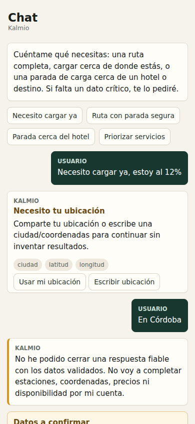
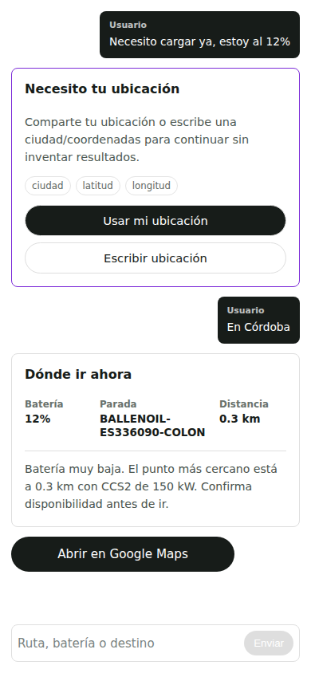
Evaluacion de valor para usuario final
Aporta valor real- Utilidad: permite decidir una accion inmediata: ir al punto trazado mas cercano o abrir Maps.
- Claridad: conserva el dato critico de bateria, muestra distancia y nombra el punto de carga.
- Confianza: no inventa disponibilidad en vivo, precios ni estado del vehiculo; pide confirmar disponibilidad.
- Ansiedad de carga: reduce ambiguedad con una recomendacion concreta y un unico CTA principal.
- Decision: el usuario sabe donde ir ahora y que limite debe confirmar antes de depender del cargador.
Ultima critica UX: Impeccable
Sin pendientes relevantesAssessment A: revision manual
- La salida final responde al estado mental correcto: urgencia, baja bateria y necesidad de accion.
- La jerarquia prioriza "Donde ir ahora", bateria, parada, distancia, riesgo y CTA.
- El riesgo esta formulado sin prometer disponibilidad en vivo ni seguridad absoluta.
- La estacion larga ya no se trunca; se parte en dos lineas y sigue siendo identificable.
Assessment B: detector y navegador
- Detector estatico:
[]en los archivos tocados. - Detector navegador: el hallazgo de padding en chips quedo resuelto.
- Advertencias restantes: transiciones de sidebar, tipografia global Geist y "nested cards" detectado sobre tarjetas A2UI directas. Son globales/falsos positivos para este caso y no bloquean el flujo urgente.
- Independencia de doble assessment: degradada porque no hay subagentes disponibles; se ejecuto revision manual + detector automatizado + evidencia de navegador.
Verificacion tecnica
OKbackend/.venv/bin/python -m pytest routing/test_route_api.py -k "urgent_charge_card_normalizes or repairs_missing_urgent_battery": 6 passed.frontend npm run test -- --run src/components/a2ui/a2ui-renderer.test.tsx: 13 passed.frontend npm run lint: OK.frontend npm run build: OK, con aviso no bloqueante de chunk Vite mayor de 500 kB.- DeepSeek final: 2 turnos, herramienta
search_destination_chargerscon 3 resultados, salida A2UI valida. - Analisis de trazas: ultimos turnos sin guardrails; llamada final DeepSeek con coste estimado bajo.
Archivos modificados
Caso 001backend/routing/agent.pybackend/routing/test_route_api.pyfrontend/src/lib/a2ui/kalmio-catalog.jsonfrontend/src/components/a2ui/a2ui-renderer.tsxfrontend/src/components/a2ui/a2ui-renderer.test.tsxreports/artifacts/case-001-before-mobile.pngreports/artifacts/case-001-after-mobile.htmlreports/artifacts/case-001-after-mobile.pngreports/ux-testcase-report.html
Caso 002: Bateria al 8% y zona desconocida
Final: pasaConversacion: Estoy al 8% y no conozco la zona + seguimiento En Cordoba.
Flujo que valida: una persona con margen muy bajo y sin familiaridad con la zona debe recibir una opcion primaria segura y accionable, aviso de riesgo visible antes de explorar alternativas y un CTA de navegacion si hay coordenadas trazables.
Salida inicial real
Tecnicamente devolvio una opcion cercana, dos alternativas, riesgo y boton de Maps. El problema fue la jerarquia movil: despues de la tarjeta urgente aparecian alternativas antes del riesgo y antes del CTA.
Orden inicial: UrgentChargeCard -> AlternativeStopsList -> RiskExplanationCard -> ActionButtons UrgentChargeCard: battery: 8 nearest: BALLENOIL-ES336090-COLON distanceKm: 0.3 ActionButtons: Abrir en Google Maps functionCall.openUrl -> https://www.google.com/maps/dir/?api=1&destination=37.890608,-4.777821
Problemas encontrados
- En mobile, el primer viewport no dejaba el CTA visible para una situacion de 8% de bateria.
- El riesgo bajo margen quedaba despues de alternativas, aumentando carga cognitiva en un momento urgente.
- Una iteracion intermedia emitio
margen_muy_bajocomo copy visible, demasiado tecnico para usuario final. - Otra iteracion intermedia perdio el boton de navegacion y lo sustituyo por texto, reduciendo accionabilidad.
- La correccion debia mantenerse en filosofia A2UI: guiar al agente, no hacer que Django decida intencion ni componga UI nueva.
Cambios realizados: Caso 002
Acotados al caso- Se ajustaron instrucciones del agente para bateria
<=10%: una parada primaria, riesgo humano visible cerca de la parada y solo 1-2 alternativas trazadas despues. - Se exigio que, si la parada primaria tiene coordenadas trazables,
ActionButtonsconfunctionCall.openUrlvaya antes de cualquierAlternativeStopsList. - Se aclaro que
UrgentChargeCard.riskdebe ser una frase humana, no metadata ni enums. - Se indico que un
RiskExplanationCard, si aparece, debe ir antes de alternativas. - Se agrego un test de prompt que protege este orden sin introducir parsers ni reglas backend de intencion conversacional.
Resultado final: Caso 002
DeepSeek reejecutado
La reejecucion final devuelve el orden correcto:
AssistantMessage, PreferenceChips, UserMessage,
LocationRequestCard, UserMessage, UrgentChargeCard,
ActionButtons, RiskExplanationCard, AlternativeStopsList.
UrgentChargeCard: battery: 8 nearest: BALLENOIL-ES336090-COLON distanceKm: 0.3 risk: Estas al 8% de bateria. El margen es muy bajo; dirigete cuanto antes a la estacion mas cercana. ActionButtons: Abrir en Google Maps functionCall.openUrl -> https://www.google.com/maps/dir/?api=1&destination=37.890608,-4.777821 RiskExplanationCard: Solo hay datos de puntos de carga autorizados. Confirma acceso, tarifa y disponibilidad antes de depender de ellos. AlternativeStopsList: Parking Calle Sevilla Nº5 - Cordoba, 0.5 km, 22 kW, TYPE2 Hotel Cordoba Center, 0.59 km, 22 kW, TYPE2
Capturas antes/despues: Caso 002
Mobile 390x844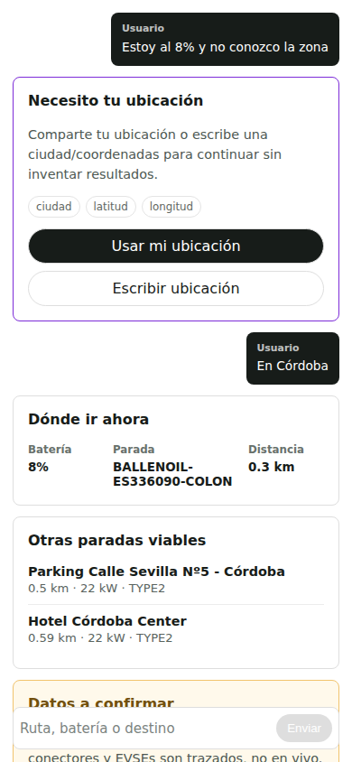
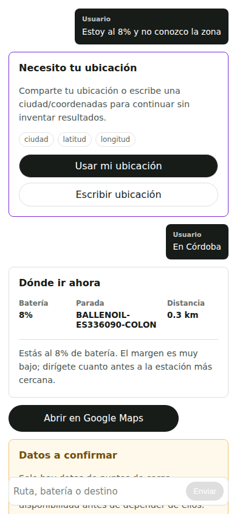
Evaluacion de valor: Caso 002
Aporta valor real- Utilidad: ofrece una decision inmediata: ir al punto mas cercano trazado y abrir navegacion.
- Claridad: mantiene el 8% visible, nombra la parada primaria y evita enterrar el CTA bajo alternativas.
- Confianza: no inventa disponibilidad en vivo, tarifa ni estado del vehiculo; separa datos trazados de confirmaciones necesarias.
- Ansiedad de carga: reduce opciones al inicio y coloca el riesgo antes de la exploracion secundaria.
- Decision: el usuario entiende que la accion principal es moverse ya y que las alternativas son respaldo, no un menu para comparar con calma.
Ultima critica UX: Caso 002
Sin pendientes relevantesAssessment A: revision manual mobile
- La jerarquia final coincide con el estado mental del usuario: primero ubicacion, luego parada primaria, riesgo y CTA.
- La tarjeta urgente usa una frase comprensible para el riesgo; no expone enums ni metadatos internos.
- El CTA aparece antes de alternativas, que es la decision adecuada para 8% de bateria y zona desconocida.
- El bloque de riesgo ampliado queda parcialmente continuado bajo el primer viewport, pero el riesgo primario y la accion ya estan visibles.
Assessment B: detector y contrato
- Detector Impeccable sobre archivos tocados:
[]. - Prueba backend dirigida:
7 passed. - Contrato A2UI: el agente sigue eligiendo los componentes; el backend no crea UI enriquecida ni decide la intencion.
- Sin problemas pendientes de UX, copy, accesibilidad o responsive relevantes para este caso.
Verificacion tecnica: Caso 002
OKbackend/.venv/bin/python -m pytest routing/test_route_api.py -k "low_margin_urgent_order or urgent_charge_card_normalizes or repairs_missing_urgent_battery": 7 passed.node .agents/skills/impeccable/scripts/detect.mjs --json backend/routing/agent.py backend/routing/test_route_api.py frontend/src/components/a2ui/a2ui-renderer.tsx frontend/src/index.css:[].- DeepSeek final: 2 turnos, salida A2UI v0.9.1 valida con
updateComponentsyupdateDataModel. - Evidencia visual final: captura movil 390x844 con parada primaria, riesgo y CTA visibles antes de alternativas.
Archivos modificados: Caso 002
Caso 002backend/routing/agent.pybackend/routing/test_route_api.pyreports/artifacts/case-002-before-mobile.htmlreports/artifacts/case-002-before-mobile.pngreports/artifacts/case-002-after-mobile.htmlreports/artifacts/case-002-after-mobile.pngreports/ux-testcase-report.html
Caso 003: Cargador ocupado y plan B
Final: pasaConversacion: setup con Estoy al 8% y no conozco la zona + En Cordoba, seguido de El cargador al que iba está ocupado, dame un plan B.
Flujo que valida: una persona que ya iba hacia una parada urgente descubre que esta ocupada. Kalmio debe usar alternativas previas trazadas, no repetir la parada ocupada como primaria, explicar el riesgo por bateria baja y recordar que la disponibilidad en vivo puede cambiar.
Salida inicial real
El setup produjo una parada primaria y alternativas, pero el turno de plan B fallo: no reutilizo las alternativas previas y termino en fallback.
Usuario: El cargador al que iba está ocupado, dame un plan B Respuesta inicial: No he podido cerrar una respuesta fiable con los datos validados. No voy a completar estaciones, coordenadas, precios ni disponibilidad por mi cuenta.
Problemas encontrados
- Valor de usuario insuficiente: no daba plan B en una situacion de bateria al 8%.
- El agente intento reparar, pero invento o altero coordenadas/distancias en iteraciones intermedias; el validador hizo bien en rechazar.
- El contexto que recibia el agente solo listaba nombres de alternativas, no sus metricas y coordenadas trazadas.
- Variantes seguras del agente (
stationNamesinname,nearest: trueconstationName) provocaban rechazo o fallback. - UX: la respuesta final debia nombrar explicitamente la parada descartada para evitar que el usuario vuelva al CTA antiguo del historial.
Cambios realizados: Caso 003
Acotados al caso- Se amplio la guia del agente para cargador ocupado: descartar visiblemente la parada primaria anterior, reutilizar alternativas previas exactas y no inventar metricas ni coordenadas.
- El resumen conversacional ahora expone al agente las alternativas previas con distancia, potencia, conectores y lat/lon trazables.
- El backend normaliza variantes inocuas de
AlternativeStopsList:stationName->name, alias de distancia/potencia y coordenadas enlocation. - El backend ignora
nearest: trueenUrgentChargeCardcuando existestationNametrazable. ActionButtonsconfunctionCall.openUrlreciben una etiqueta segura si el agente omitiolabel, evitando botones vacios.- Se agregaron tests para plan B, contexto previo trazado, normalizacion de variantes y labels de acciones.
Resultado final: Caso 003
DeepSeek reejecutado
La reejecucion final conserva el historial y añade estos bloques para el turno de plan B:
AssistantMessage, UrgentChargeCard, ActionButtons,
AlternativeStopsList, RiskExplanationCard.
AssistantMessage: El cargador de BALLENOIL-ES336090-COLON está ocupado. Con solo un 8% de batería, prioriza esta alternativa muy cercana. UrgentChargeCard: battery: 8 nearest: Parking Calle Sevilla Nº5 - Córdoba distanceKm: 0.5 risk: Margen muy bajo: con el 8% de batería, cualquier desvío adicional puede dejarte sin energía. ActionButtons: Navegar a Parking Calle Sevilla Nº5 functionCall.openUrl -> https://www.google.com/maps/dir/?api=1&destination=37.883857,-4.780831 AlternativeStopsList: Hotel Córdoba Center, 0.59 km, 22 kW, TYPE2
Capturas antes/despues: Caso 003
Mobile 390x844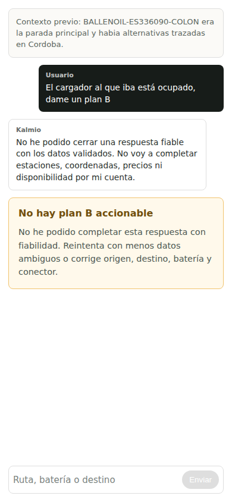
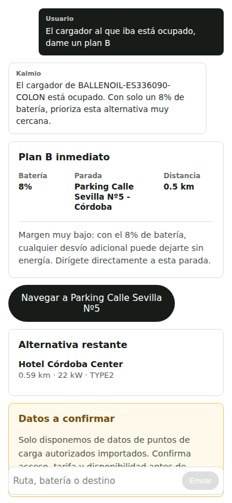
Evaluacion de valor: Caso 003
Aporta valor real- Utilidad: transforma un bloqueo urgente en una accion concreta: ir a Parking Calle Sevilla Nº5.
- Claridad: nombra el cargador descartado y separa el plan B de la alternativa restante.
- Confianza: usa solo estaciones, distancias y coordenadas ya trazadas; no inventa disponibilidad ni precios.
- Ansiedad de carga: evita comparar demasiado y mantiene un unico CTA principal visible.
- Decision: el usuario sabe no volver a BALLENOIL y tiene una ruta alternativa inmediata.
Ultima critica UX: Caso 003
Sin pendientes relevantesAssessment A: revision manual mobile
- La salida final responde al seguimiento real, no reinicia el flujo ni pide datos innecesarios.
- La jerarquia es adecuada para 8%: descarte del punto ocupado, plan B inmediato, CTA y alternativa secundaria.
- El copy evita prometer disponibilidad en vivo y mantiene la recomendacion como accion urgente, no comparativa larga.
- La captura muestra el contenido principal completo; el bloque final de datos a confirmar continua bajo el composer, pero no oculta la decision principal.
Assessment B: detector y contrato
- Detector Impeccable sobre archivos tocados:
[]. - Prueba backend dirigida:
12 passed. - Contrato A2UI: el agente elige el plan B; el backend solo normaliza variantes seguras, valida trazabilidad y rechaza datos inventados.
- Sin problemas relevantes pendientes para este caso.
Verificacion tecnica: Caso 003
OKbackend/.venv/bin/python -m pytest routing/test_route_api.py -k "plan_b or previous_alternative_stop_details or alternative_stops_list_normalizes or boolean_nearest or action_buttons_adds_label or low_margin_urgent_order or urgent_charge_card_normalizes or repairs_missing_urgent_battery": 12 passed.node .agents/skills/impeccable/scripts/detect.mjs --json backend/routing/agent.py backend/routing/test_route_api.py:[].- DeepSeek final3: 3 turnos, reutiliza alternativas previas y no llama herramientas en el turno de plan B.
- Traza final del turno plan B: 1 llamada LLM, 0 herramientas, sin guardrails, coste estimado aproximado
$0.00020693.
Archivos modificados: Caso 003
Caso 003backend/routing/agent.pybackend/routing/test_route_api.pyreports/artifacts/case-003-before-mobile.htmlreports/artifacts/case-003-before-mobile.pngreports/artifacts/case-003-after-mobile.htmlreports/artifacts/case-003-after-mobile.pngreports/ux-testcase-report.html
Caso 004: En carretera y poco desvio
Final: pasaConversacion: Estoy en carretera con 18%, no quiero desviarme mucho.
Flujo que valida: una persona en carretera con bateria baja quiere una parada con poco desvio. Kalmio no debe hacer una busqueda urbana arbitraria; debe pedir carretera, zona actual/coordenadas y destino antes de prometer puntos de carga.
Salida inicial real
Tecnicamente fue segura: no llamo herramientas ni invento cargadores. Pero quedo como texto suelto, sin estructura para capturar los datos que realmente minimizan desvio.
Entendido, estás en carretera con batería baja. ¿Por dónde vas ahora? Dime la carretera, ciudad o zona más cercana para buscar una parada de carga con poco desvío.
Problemas encontrados
- UX móvil insuficiente: el usuario tenia que contestar desde texto libre sin campos claros.
- La respuesta inicial no separaba carretera/zona actual, destino y coordenadas como datos distintos.
- Una primera correccion llevo a
LocationRequestCardgenerica con campos ciudad/latitud/longitud, demasiado urbana para "en carretera". - El flujo necesitaba mantener el limite A2UI: el agente pide la aclaracion; el backend no decide destino ni busca cargadores.
Cambios realizados: Caso 004
Acotados al caso- Se reforzo la guia del agente para carretera y poco desvio: pedir carretera, zona actual/coordenadas y destino si faltan.
- Se indico preferir
ClarifyingQuestionCardcon camposcarretera_o_zona_actual,destinoycoordenadas. - Se aclaro que no debe mostrar campos genericos de ciudad cuando el usuario ya dijo que esta en carretera y busca poco desvio.
- Se agrego un test de prompt para evitar regresiones sin introducir parser de intencion en Django.
Resultado final: Caso 004
DeepSeek reejecutado
La reejecucion final devuelve ClarifyingQuestionCard y no llama herramientas ni inventa puntos de carga.
ClarifyingQuestionCard:
question: ¿Por qué carretera vas y cuál es tu zona actual o destino? Así busco puntos de carga con poco desvío.
fields:
- carretera_o_zona_actual (required)
- destino (optional)
- coordenadas (optional)
Capturas antes/despues: Caso 004
Mobile 390x844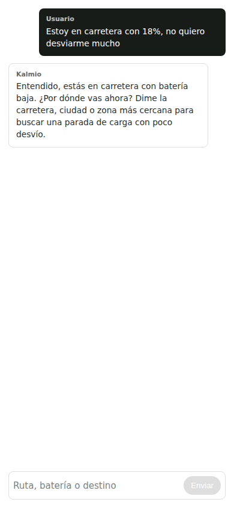
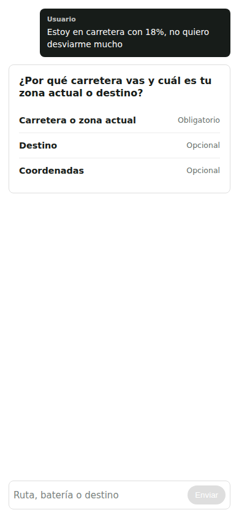
Evaluacion de valor: Caso 004
Aporta valor real- Utilidad: recopila los datos minimos para decidir una parada con poco desvio.
- Claridad: separa carretera/zona, destino y coordenadas; evita una pregunta ambigua.
- Confianza: no inventa puntos de carga, coordenadas, ruta ni disponibilidad.
- Ansiedad de carga: reconoce bateria baja sin acelerar a una recomendacion no trazada.
- Decision: el usuario sabe exactamente que dato enviar para que Kalmio pueda buscar con sentido.
Ultima critica UX: Caso 004
Sin pendientes relevantesAssessment A: revision manual mobile
- La jerarquia final es ligera y adecuada para carretera: un solo bloque de aclaracion, sin cards innecesarias.
- Los campos son concretos y reducen la friccion frente al texto libre inicial.
- No se presenta ningun cargador ni accion de navegacion sin datos trazables.
- La captura no muestra solapes ni texto cortado; todo el flujo cabe en el primer viewport movil.
Assessment B: detector y contrato
- Detector Impeccable sobre archivos tocados:
[]. - Prueba backend dirigida:
13 passed. - Contrato A2UI: el agente eligio
ClarifyingQuestionCard; el backend solo valido estructura. - Sin problemas pendientes de UX, copy, responsive o trazabilidad para este caso.
Verificacion tecnica: Caso 004
OKbackend/.venv/bin/python -m pytest routing/test_route_api.py -k "structured_road_context or plan_b or previous_alternative_stop_details or alternative_stops_list_normalizes or boolean_nearest or action_buttons_adds_label or low_margin_urgent_order or urgent_charge_card_normalizes or repairs_missing_urgent_battery": 13 passed.node .agents/skills/impeccable/scripts/detect.mjs --json backend/routing/agent.py backend/routing/test_route_api.py:[].- DeepSeek final2: 1 turno,
ClarifyingQuestionCard, 0 herramientas, sin guardrails. - Traza final: 1 llamada LLM, coste estimado aproximado
$0.00032351.
Archivos modificados: Caso 004
Caso 004backend/routing/agent.pybackend/routing/test_route_api.pyreports/artifacts/case-004-before-mobile.htmlreports/artifacts/case-004-before-mobile.pngreports/artifacts/case-004-after-mobile.htmlreports/artifacts/case-004-after-mobile.pngreports/ux-testcase-report.html
Caso 005: Poca bateria y niños
Final: pasaConversacion: Tengo poca batería y voy con niños + seguimiento En Córdoba.
Flujo que valida: Kalmio debe priorizar baja complejidad y parada cercana, explicar el riesgo, y mencionar servicios solo como datos trazados o comodidad potencial, sin claims de seguridad/idealidad para niños.
Salida inicial real
La salida inicial encontraba una parada y alternativas, pero dejaba el CTA tras alternativas y formulaba servicios como cercanos para niños sin trazabilidad suficiente.
Problemas visibles: - ActionButtons despues de AlternativeStopsList. - battery: "baja" en vez de null. - "cafetería y supermercado cerca" como claim no trazado.
Problemas encontrados
- Contrato A2UI:
UrgentChargeCard.batterydebe ser numero onull, no texto cualitativo. - UX: el CTA de navegación quedaba por debajo de alternativas en un caso de baja bateria con niños.
- Confianza: amenities trazados se convertian en claim de cercania/entretenimiento para niños.
- Copy: habia que evitar superlativos globales y formular servicios como trazados, no como garantia.
Cambios realizados: Caso 005
Acotados al caso- Se indico al agente usar
battery:nullcuando el usuario dice poca bateria sin porcentaje. - Se reforzo el orden urgente para baja bateria cualitativa: parada, riesgo, CTA y luego alternativas.
- Se acoto el copy de servicios: amenities solo como servicios trazados o comodidad potencial.
- Se agrego validacion de copy para rechazar claims de niños/seguridad/comodidad no trazados.
- Se agregaron tests para bateria cualitativa, amenities y copy de comodidad.
Resultado final: Caso 005
DeepSeek reejecutadoLa reejecucion final devuelve parada primaria, riesgo, CTA y alternativas. La reparacion del contrato evita el claim no trazado.
UrgentChargeCard: battery: null nearest: BALLENOIL-ES336090-COLON distanceKm: 0.3 risk: Batería baja sin porcentaje exacto. Viajas con niños; esta parada tiene cafetería y supermercado como servicios trazados. RiskExplanationCard: No tenemos tu nivel exacto de batería. Conduce con precaución y confirma disponibilidad antes de llegar. ActionButtons: Abrir en Google Maps functionCall.openUrl -> https://www.google.com/maps/dir/?api=1&destination=37.890608,-4.777821
Capturas antes/despues: Caso 005
Mobile 390x844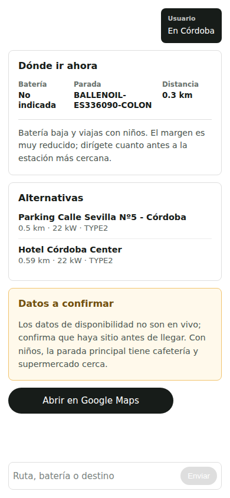
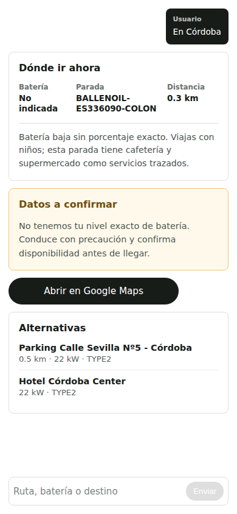
Evaluacion de valor: Caso 005
Aporta valor real- Utilidad: da una parada inmediata cercana y accionable.
- Claridad: no inventa porcentaje de bateria; declara que el nivel exacto es desconocido.
- Confianza: servicios se presentan como trazados, no como promesa de seguridad o disponibilidad.
- Ansiedad de carga: reduce comparacion y mantiene el CTA antes de alternativas.
- Decision: permite moverse ya y entender que debe confirmar disponibilidad.
Ultima critica UX: Caso 005
Sin pendientes relevantesAssessment A: revision manual mobile
- La jerarquia final prioriza parada y CTA antes de alternativas.
- El copy evita "seguro", "ideal", "apto" o claims de entretenimiento para niños.
- La falta de porcentaje exacto queda visible sin degradar el plan urgente.
- Queda un detalle menor no bloqueante: la segunda alternativa no muestra distancia final, pero no afecta la decision primaria.
Assessment B: detector y contrato
- Detector Impeccable sobre archivos tocados:
[]. - Prueba backend dirigida:
17 passed. - Contrato A2UI: el agente elige bloques; el backend valida bateria, trazabilidad y copy de claims no soportados.
- Sin problemas relevantes pendientes para este caso.
Verificacion tecnica: Caso 005
OKbackend/.venv/bin/python -m pytest routing/test_route_api.py -k "comfort_copy or qualitative_low_battery or non_numeric_battery or structured_road_context or plan_b or previous_alternative_stop_details or alternative_stops_list_normalizes or boolean_nearest or action_buttons_adds_label or low_margin_urgent_order or urgent_charge_card_normalizes or repairs_missing_urgent_battery": 17 passed.node .agents/skills/impeccable/scripts/detect.mjs --json backend/routing/agent.py backend/routing/test_route_api.py frontend/src/components/a2ui/a2ui-renderer.tsx frontend/src/index.css:[].- DeepSeek final5: 2 turnos, herramientas
resolve_locationysearch_destination_chargers, reparación de copy, salida A2UI valida. - Traza final del turno de resultados: 4 llamadas LLM, 2 herramientas, coste estimado aproximado
$0.00223816.
Archivos modificados: Caso 005
Caso 005backend/routing/agent.pybackend/routing/test_route_api.pyreports/artifacts/case-005-before-mobile.htmlreports/artifacts/case-005-before-mobile.pngreports/artifacts/case-005-after-mobile.htmlreports/artifacts/case-005-after-mobile.pngreports/ux-testcase-report.html
Caso 006: Cordoba a Valencia sin llegar justo
Final: pasaConversacion: Voy de Cordoba a Valencia con 58%. No quiero llegar justo.
Flujo que valida: Kalmio debe planificar con herramientas de ruta cuando estan disponibles, mostrar paradas trazadas en el corredor y explicar que el margen de llegada no puede validarse sin consumo, bateria usable o perfil real del vehiculo.
Salida inicial real
DeepSeek llamo correctamente a plan_route y recibio una ruta de 520.3 km con paradas,
pero la respuesta visible cayo a un fallback generico.
Componentes iniciales: - AssistantMessage - PreferenceChips - UserMessage - AssistantMessage fallback - RiskExplanationCard
Problemas encontrados
- Valor de usuario bajo: habia herramienta de ruta exitosa, pero la UI no mostraba resumen, parada ni alternativas.
- Confianza: el fallback decia que no podia cerrar una respuesta fiable sin explicar que datos si estaban trazados.
- Validacion: el guardrail leia metadata estructurada como si fuera copy visible y rechazaba bloques validos.
- Copy: una iteracion posterior atribuia el 20% al usuario aunque era margen conservador por defecto.
- Copy: otra iteracion prometia "asegurar margen" pese a que
planningLevelerachargers_only. - Mobile: el orden intermedio retrasaba la parada primaria tras una explicacion larga de riesgo.
Cambios realizados: Caso 006
Acotados al caso- Se guio al agente para rutas
chargers_only: resumen trazado, parada recomendada, riesgo y alternativas. - Se hizo explicito que el 20% es margen conservador por defecto cuando el usuario no da un porcentaje de reserva.
- Se prohibio el copy de garantia: sin datos de vehiculo no se puede asegurar ni validar el margen de llegada.
- Se limito la extraccion de copy visible a claves realmente visibles, sin tratar amenities o razones estructuradas como texto de UI.
- Se ajusto el matching de terminos de copy para no rechazar palabras por subcadenas accidentales.
- Se agregaron tests de contrato A2UI para metadata estructurada, reserva por defecto y margen no validado.
Resultado final: Caso 006
DeepSeek reejecutado
La reejecucion final usa plan_route, conserva la filosofia A2UI y devuelve bloques utiles sin inventar
autonomia, energia, bateria de llegada, disponibilidad ni precios.
RouteSummaryCard: distanceKm: 520.3 durationMin: 343 energyKwh: null arrivalBattery: null RecommendedStopCard: station: V-VALENCIA-022-2 powerKw: 22 distanceKm: 1.58 detourMin: 4 evses: 4 confidence: media RiskExplanationCard: No puedo validar la bateria de llegada ni el margen sin consumo y bateria usable del vehiculo.
Capturas antes/despues: Caso 006
Mobile 390x844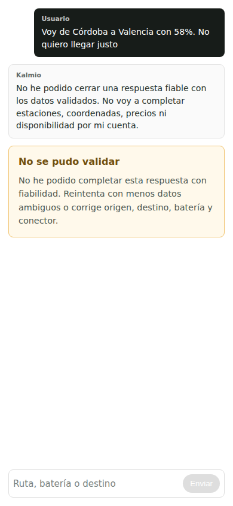
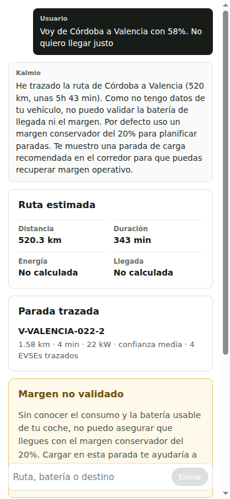
Evaluacion de valor: Caso 006
Aporta valor real- Utilidad: muestra distancia, tiempo y una parada trazada en el corredor, no solo una disculpa.
- Claridad: separa datos conocidos de datos no calculados: energia y bateria de llegada quedan como desconocidas.
- Confianza: no inventa autonomia, disponibilidad, precios ni estado del vehiculo.
- Ansiedad de carga: reduce incertidumbre con una parada concreta y explica por que el margen no esta validado.
- Decision: permite elegir una parada primaria o comparar alternativas, sabiendo que falta perfil de vehiculo.
Ultima critica UX: Caso 006
Sin pendientes relevantesAssessment A: revision manual mobile
- La jerarquia final pone resumen y parada primaria antes de alternativas, con riesgo visible inmediatamente despues.
- La copia distingue "margen conservador por defecto" de una preferencia dada por el usuario.
- El mensaje evita prometer llegada con margen; habla de recuperar margen operativo no validado.
- Detalle menor no bloqueante: los IDs de estacion son opacos porque no hay nombre comercial o direccion mejor trazada.
Assessment B: detector y contrato
- Detector Impeccable sobre archivos tocados:
[]. - Prueba backend dirigida:
18 passed. - Contrato A2UI: el agente decide
RouteSummaryCard,RecommendedStopCard,RiskExplanationCardyAlternativeStopsList; el backend solo valida, normaliza variantes seguras y rechaza copy no trazado. - Sin problemas relevantes pendientes de UX, copy, responsive, accesibilidad o trazabilidad para este caso.
Verificacion tecnica: Caso 006
OKbackend/.venv/bin/python -m pytest backend/routing/test_route_api.py -k "unvalidated_margin or default_reserve or chargers_only_route or visible_amenity_proximity or codex_prompt_guides_chargers_only or comfort_copy or qualitative_low_battery or structured_road_context or plan_b or alternative_stops_list_normalizes or urgent_charge_card_normalizes": 18 passed.node .agents/skills/impeccable/scripts/detect.mjs --json backend/routing/agent.py backend/routing/test_route_api.py frontend/src/components/a2ui/a2ui-renderer.tsx frontend/src/index.css:[].- DeepSeek final5: 1 turno, herramienta
plan_route, salida A2UI valida con 8 componentes. - Traza final: 3 llamadas LLM, 1 herramienta, coste estimado aproximado
$0.00230228.
Archivos modificados: Caso 006
Caso 006backend/routing/agent.pybackend/routing/test_route_api.pyreports/artifacts/case-006-before-mobile.htmlreports/artifacts/case-006-before-mobile.pngreports/artifacts/case-006-after-mobile.htmlreports/artifacts/case-006-after-mobile.pngreports/ux-testcase-report.html
Caso 007: Madrid a Malaga manana con 80%
Final: pasaConversacion: Voy de Madrid a Málaga mañana y salgo con 80%.
Flujo que valida: Kalmio debe planificar paradas de carga con la herramienta de ruta y advertir de forma visible que, al ser manana, disponibilidad, acceso y tarifas pueden cambiar antes del viaje.
Salida inicial real
La salida inicial llamo a plan_route y mostro ruta, parada principal y alternativas, pero omitio
la advertencia temporal requerida para manana.
Componentes iniciales: - AssistantMessage - PreferenceChips - UserMessage - AssistantMessage - RouteSummaryCard - RecommendedStopCard - AlternativeStopsList - RiskExplanationCard
Problemas encontrados
- Criterio de aceptacion: faltaba decir que disponibilidad, acceso y tarifas pueden cambiar antes de manana.
- Copy posterior: una iteracion formulaba el 80% de salida como si fuera bateria de llegada.
- Jerarquia mobile: otra iteracion ponia la advertencia futura despues de la parada, quedando fuera del primer viewport.
- Confianza: habia que mantener claro que
planningLevel=chargers_onlyno calcula energia, llegada ni paradas optimas.
Cambios realizados: Caso 007
Acotados al caso- Se reforzo el prompt para viajes futuros: advertencia visible de disponibilidad, acceso y tarifas antes de mostrar opciones de carga.
- Se agrego validacion de copy para viajes futuros explicitos, sin hacer que Django elija intencion ni componentes.
- Se agrego validacion para no convertir
salgo con X%en bateria de llegada o reserva. - Se agrego validacion de posicion: la advertencia futura debe ir en el primer mensaje o antes de
RecommendedStopCard/AlternativeStopsList. - Se cubrieron las nuevas reglas con tests dirigidos de contrato A2UI.
Resultado final: Caso 007
DeepSeek reejecutado
La reejecucion final usa plan_route y muestra la advertencia de manana en el primer mensaje.
No inventa autonomia, energia, bateria de llegada, disponibilidad en vivo ni tarifas.
AssistantMessage: Manana sales de Madrid a Malaga con el 80% de bateria. Recuerda que la disponibilidad, acceso y tarifas pueden cambiar antes del viaje. RouteSummaryCard: distanceKm: 529.2 durationMin: 365 energyKwh: null arrivalBattery: null RecommendedStopCard: Aparcamiento CTM 400 kW, desvio 5 min, 15 EVSEs trazados, confianza media
Capturas antes/despues: Caso 007
Mobile 390x844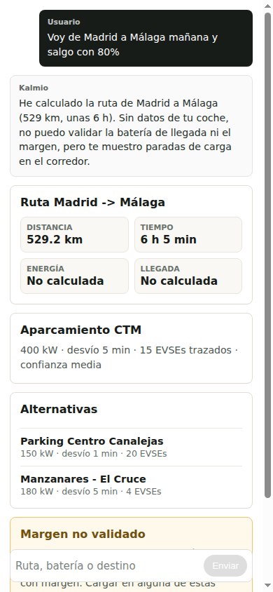
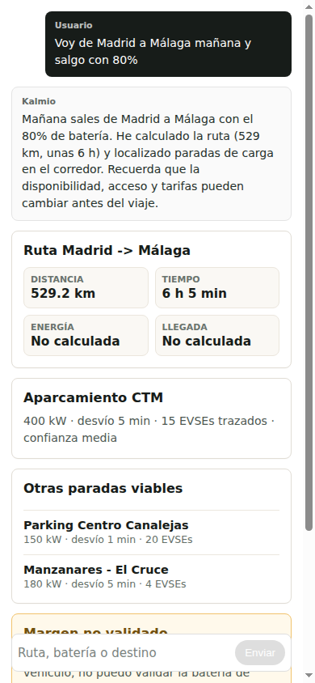
Evaluacion de valor: Caso 007
Aporta valor real- Utilidad: muestra distancia, duracion, una parada principal y alternativas trazadas en el corredor.
- Claridad: el 80% queda como bateria de salida; llegada y energia aparecen como no calculadas.
- Confianza: no afirma disponibilidad en vivo ni tarifas; avisa que pueden cambiar antes de manana.
- Ansiedad de carga: reduce incertidumbre con opciones concretas, sin venderlas como paradas optimas.
- Decision: permite revisar paradas y saber que falta modelo/consumo para calcular necesidad real de carga.
Ultima critica UX: Caso 007
Sin pendientes relevantesAssessment A: revision manual mobile
- La advertencia temporal aparece en el primer viewport, antes de que el usuario compare paradas.
- La ruta muestra distancia/duracion y conserva
No calculadapara energia y llegada. - La parada principal y alternativas son trazadas por herramienta; no se inventan coordenadas, precios ni disponibilidad real.
- Detalle menor no bloqueante: algunas estaciones estan cerca del origen porque la herramienta devuelve cargadores de corredor, no paradas optimas con perfil de vehiculo.
Assessment B: detector y contrato
- Detector Impeccable sobre archivos tocados:
[]. - Prueba backend dirigida:
10 passed. - Contrato A2UI: el agente sigue decidiendo la UI; el backend solo valida copy temporal, trazabilidad de bateria y posicion de advertencia.
- Sin problemas relevantes pendientes para este caso.
Verificacion tecnica: Caso 007
OKbackend/.venv/bin/python -m pytest backend/routing/test_route_api.py -k "future_warning_after_recommended_stop or future_warning_after_alternatives or departure_battery or future_route or unvalidated_margin or default_reserve or chargers_only_route or visible_amenity_proximity or codex_prompt_guides_chargers_only": 10 passed.node .agents/skills/impeccable/scripts/detect.mjs --json backend/routing/agent.py backend/routing/test_route_api.py frontend/src/components/a2ui/a2ui-renderer.tsx frontend/src/index.css:[].- DeepSeek final4: 1 turno, herramienta
plan_route, salida A2UI valida con 8 componentes. - Traza final: 2 llamadas LLM, 1 herramienta, coste estimado aproximado
$0.00118629.
Archivos modificados: Caso 007
Caso 007backend/routing/agent.pybackend/routing/test_route_api.pyreports/artifacts/case-007-before-mobile.htmlreports/artifacts/case-007-before-mobile.pngreports/artifacts/case-007-after-mobile.htmlreports/artifacts/case-007-after-mobile.pngreports/ux-testcase-report.html
Caso 008: Sevilla a Granada sin cargar
Final: pasaConversacion: Voy de Sevilla a Granada, ¿me da para llegar sin cargar?.
Flujo que valida: Kalmio no debe responder si/no sin bateria actual, autonomia, modelo o consumo. Debe aportar contexto de ruta y pedir los datos criticos para calcular.
Salida inicial real
La salida inicial fue honesta y pidio datos del coche, pero no ofrecio contexto de ruta, distancia ni duracion.
AssistantMessage: Para saber si llegas sin cargar necesito algunos datos de tu coche: modelo, bateria actual y consumo medio.
Problemas encontrados
- Valor insuficiente: el usuario no podia dimensionar si 250 km es mucho o poco para su coche.
- La respuesta parecia un formulario: correcta pero pobre para reducir ansiedad de carga.
- Una iteracion posterior mostro paradas recomendadas y alternativas, desviando una pregunta sobre llegar sin cargar.
- Habia que mantener A2UI: el agente decide usar ruta/resumen; el backend no convierte texto en UI enriquecida.
Cambios realizados: Caso 008
Acotados al caso- Se guio al agente para preguntas de suficiencia: usar
plan_routepara distancia/duracion si hay origen y destino. - Se reforzo que no debe responder si/no ni afirmar llegada sin bateria actual, autonomia, modelo o consumo.
- Se indico no mostrar
RecommendedStopCard/AlternativeStopsListcomo recomendacion principal para una pregunta de "sin cargar", salvo que el usuario pida respaldo. - Se agrego test de prompt para este flujo sin introducir parser de intencion en Django.
Resultado final: Caso 008
DeepSeek reejecutado
La reejecucion final llama plan_route y devuelve contexto de ruta sin inventar autonomia ni llegada.
AssistantMessage: La distancia entre Sevilla y Granada es de unos 250 km, unas 3 horas. No puedo confirmar si llegas sin cargar sin modelo, bateria actual, autonomia o consumo. RouteSummaryCard: distanceKm: 250.1 durationMin: 179 energyKwh: no calculada arrivalBattery: no calculada RiskExplanationCard: Sin consumo ni bateria del coche, no puedo calcular si llegas con margen.
Capturas antes/despues: Caso 008
Mobile 390x844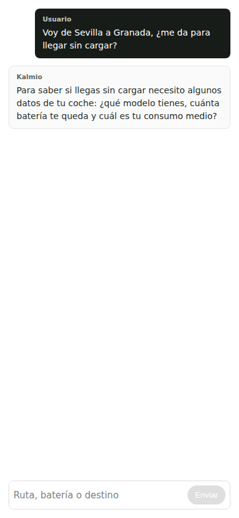
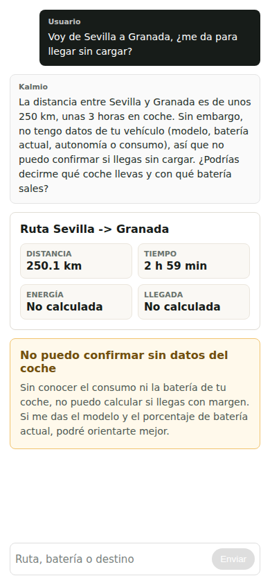
Evaluacion de valor: Caso 008
Aporta valor real- Utilidad: el usuario ve que el trayecto son 250.1 km y 2 h 59 min.
- Claridad: no hay si/no inventado; energia y llegada quedan como no calculadas.
- Confianza: pide modelo, bateria actual y consumo/autonomia antes de calcular.
- Ansiedad de carga: reduce incertidumbre sin empujar una parada de carga innecesaria.
- Decision: permite al usuario dar el dato que falta para convertir contexto en respuesta calculada.
Ultima critica UX: Caso 008
Sin pendientes relevantesAssessment A: revision manual mobile
- La pantalla final cabe en el primer viewport movil y no oculta el dato clave bajo el composer.
- La jerarquia es correcta: pregunta del usuario, explicacion, ruta y riesgo.
- No aparecen paradas recomendadas que contradigan la pregunta "sin cargar".
- La siguiente accion es clara: decir coche y bateria actual.
Assessment B: detector y contrato
- Detector Impeccable sobre archivos tocados:
[]. - Prueba backend dirigida:
11 passed. - Contrato A2UI: el agente eligio
RouteSummaryCardyRiskExplanationCard; el backend valido estructura y trazabilidad. - Sin problemas relevantes pendientes para este caso.
Verificacion tecnica: Caso 008
OKbackend/.venv/bin/python -m pytest backend/routing/test_route_api.py -k "can_i_arrive_without_charging or future_warning_after_recommended_stop or future_warning_after_alternatives or departure_battery or future_route or unvalidated_margin or default_reserve or chargers_only_route or visible_amenity_proximity or codex_prompt_guides_chargers_only": 11 passed.node .agents/skills/impeccable/scripts/detect.mjs --json backend/routing/agent.py backend/routing/test_route_api.py frontend/src/components/a2ui/a2ui-renderer.tsx frontend/src/index.css:[].- DeepSeek final2: 1 turno, herramienta
plan_route, salida A2UI valida con 6 componentes. - Traza final: 2 llamadas LLM, 1 herramienta, coste estimado aproximado
$0.00135709.
Archivos modificados: Caso 008
Caso 008backend/routing/agent.pybackend/routing/test_route_api.pyreports/artifacts/case-008-before-mobile.htmlreports/artifacts/case-008-before-mobile.pngreports/artifacts/case-008-after-mobile.htmlreports/artifacts/case-008-after-mobile.pngreports/ux-testcase-report.html
Caso 009: Alicante a Bilbao con pocas paradas
Final: pasaConversacion: Tengo que ir de Alicante a Bilbao y prefiero parar pocas veces.
Flujo que valida: Kalmio debe usar contexto de ruta, respetar la preferencia de pocas paradas y no garantizar pocas paradas sin autonomia, consumo o perfil del vehiculo.
Salida inicial real
La salida inicial mostraba ruta y puntos de carga trazados, pero el aviso de que no podia optimizar pocas paradas quedaba despues de las alternativas.
AssistantMessage: Aqui tienes la ruta de Alicante a Bilbao con paradas de carga recomendadas. RiskExplanationCard: Sin autonomia ni consumo no validamos llegada ni numero optimo de paradas.
Problemas encontrados
- Jerarquia: la limitacion sobre pocas paradas aparecia tarde en mobile.
- Copy: "paradas recomendadas" sonaba a plan optimizado, aunque la herramienta estaba en
chargers_only. - Microcopy: una iteracion usaba
517 minutosen vez de8 h 37 min. - Confianza: habia que dejar claro que las estaciones son referencia de corredor, no garantia de pocas paradas.
Cambios realizados: Caso 009
Acotados al caso- Se guio al agente para decir antes de paradas que no puede optimizar ni garantizar pocas paradas sin autonomia/consumo/modelo.
- Se acoto el copy: estaciones como puntos trazados en corredor, no como plan optimizado.
- Se reforzo formato humano de duracion larga en copy visible: horas y minutos, no cientos de minutos.
- Se agrego test de prompt para la preferencia de pocas paradas sin perfil de vehiculo.
Resultado final: Caso 009
DeepSeek reejecutado
La reejecucion final usa plan_route, muestra distancia/duracion y advierte antes de las paradas
que no puede optimizar pocas paradas sin datos del coche.
AssistantMessage: Alicante a Bilbao: 774 km, unas 8 h 37 min. No puedo optimizar ni garantizar pocas paradas sin autonomia ni consumo. Puntos de carga en el corredor como referencia. RouteSummaryCard: distanceKm: 774.1 durationMin: 517 energyKwh: null arrivalBattery: null
Capturas antes/despues: Caso 009
Mobile 390x844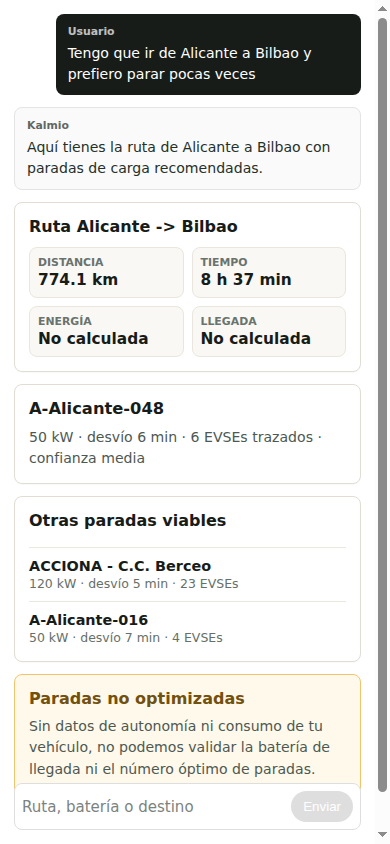
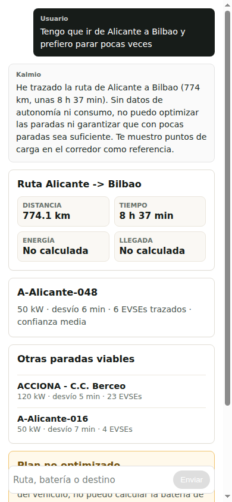
Evaluacion de valor: Caso 009
Aporta valor real- Utilidad: muestra que el trayecto son 774.1 km y 8 h 37 min.
- Claridad: no promete pocas paradas; explica que faltan autonomia, consumo o modelo.
- Confianza: estaciones presentadas como referencia de corredor, no como plan optimizado.
- Ansiedad de carga: ayuda a dimensionar el viaje sin vender falsa precision.
- Decision: permite revisar puntos de corredor y saber que dato falta para minimizar paradas de verdad.
Ultima critica UX: Caso 009
Sin pendientes relevantesAssessment A: revision manual mobile
- El primer viewport ya contiene la limitacion de pocas paradas antes de listar estaciones.
- La duracion se lee como
8 h 37 min, no como minutos crudos. - La tarjeta de ruta mantiene energia/llegada como no calculadas.
- Detalle menor no bloqueante: los IDs de algunas estaciones siguen siendo opacos cuando no hay nombre comercial mejor en datos trazados.
Assessment B: detector y contrato
- Detector Impeccable sobre archivos tocados:
[]. - Prueba backend dirigida:
12 passed. - Contrato A2UI: el agente eligio ruta y paradas; el backend valido estructura y no convirtio texto en UI.
- Sin problemas relevantes pendientes para este caso.
Verificacion tecnica: Caso 009
OKbackend/.venv/bin/python -m pytest backend/routing/test_route_api.py -k "few_stops_without_vehicle_profile or can_i_arrive_without_charging or future_warning_after_recommended_stop or future_warning_after_alternatives or departure_battery or future_route or unvalidated_margin or default_reserve or chargers_only_route or visible_amenity_proximity or codex_prompt_guides_chargers_only": 12 passed.node .agents/skills/impeccable/scripts/detect.mjs --json backend/routing/agent.py backend/routing/test_route_api.py frontend/src/components/a2ui/a2ui-renderer.tsx frontend/src/index.css:[].- DeepSeek final2: 1 turno, herramienta
plan_route, salida A2UI valida con 8 componentes. - Traza final: 2 llamadas LLM, 1 herramienta, coste estimado aproximado
$0.00174442.
Archivos modificados: Caso 009
Caso 009backend/routing/agent.pybackend/routing/test_route_api.pyreports/artifacts/case-009-before-mobile.htmlreports/artifacts/case-009-before-mobile.pngreports/artifacts/case-009-after-mobile.htmlreports/artifacts/case-009-after-mobile.pngreports/ux-testcase-report.html
Caso 010: Zaragoza a Barcelona con reserva 25%
Final: pasaConversacion: Voy de Zaragoza a Barcelona y quiero llegar con al menos 25%.
Flujo que valida: Kalmio debe usar plan_route si hay ruta, pasar el 25% como reserva,
y decir que esa reserva dura no puede validarse en chargers_only sin consumo/perfil.
Salida inicial real
La salida inicial usaba reserve_min_percent:25 y no inventaba llegada, pero la advertencia del 25%
quedaba despues de las paradas.
RiskExplanationCard: Sin datos de autonomia ni consumo, no podemos validar si llegaras con el 25%. Problema: El aviso aparece despues de RecommendedStopCard y AlternativeStopsList.
Problemas encontrados
- Jerarquia mobile: la reserva dura no validada se leia tarde.
- Confianza: el usuario podia interpretar la parada como garantia indirecta de llegar con 25%.
- Copy: hacia falta explicar antes de las opciones que la parada solo recupera margen operativo no validado.
- Contrato A2UI: mantener al agente decidiendo bloques; backend solo valida estructura/trazabilidad.
Cambios realizados: Caso 010
Acotados al caso- Se guio al agente para pasar reservas duras como
reserve_min_percent. - Se reforzo que el X% de llegada no se puede validar en
chargers_onlysin consumo/perfil. - Se indico que esa limitacion debe aparecer antes de
RecommendedStopCard/AlternativeStopsList. - Se agrego test de prompt para reserva dura de llegada sin perfil de vehiculo.
Resultado final: Caso 010
DeepSeek reejecutadoLa reejecucion final muestra ruta, reserva no validada y luego paradas trazadas. No inventa bateria de llegada ni dice que el 25% se cumpla.
AssistantMessage: Zaragoza a Barcelona: 308.6 km, unas 3 h 28 min. No puedo validar que llegues con el 25% de reserva sin datos de vehiculo. RiskExplanationCard: La parada es solo un punto de carga en el corredor; puede ayudar a recuperar margen, pero no esta optimizada para tu bateria.
Capturas antes/despues: Caso 010
Mobile 390x844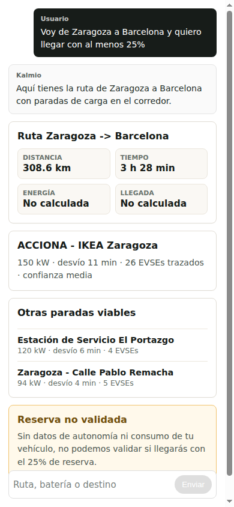
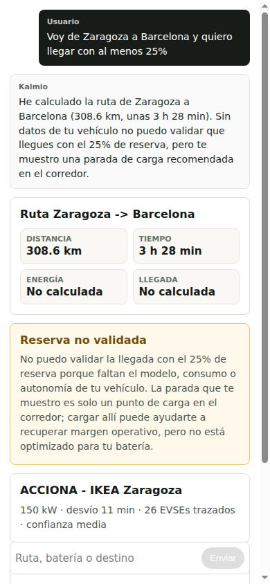
Evaluacion de valor: Caso 010
Aporta valor real- Utilidad: muestra distancia, duracion y puntos de corredor.
- Claridad: el 25% se trata como reserva deseada, no como llegada calculada.
- Confianza: declara que falta modelo, consumo o autonomia para validar la reserva.
- Ansiedad de carga: da una opcion de margen sin convertirla en garantia.
- Decision: permite seguir con datos de vehiculo o revisar paradas como respaldo trazado.
Ultima critica UX: Caso 010
Sin pendientes relevantesAssessment A: revision manual mobile
- El primer viewport muestra ruta, energia/llegada no calculadas y reserva no validada.
- La parada aparece despues del riesgo principal, reduciendo interpretaciones de garantia.
- La copia evita "asegurar" o "garantizar" margen.
- Sin problemas relevantes de responsive o jerarquia para este caso.
Assessment B: detector y contrato
- Detector Impeccable sobre archivos tocados:
[]. - Prueba backend dirigida:
13 passed. - Contrato A2UI: el agente eligio bloques; el backend valido datos y la herramienta uso
reserve_min_percent:25. - Sin problemas relevantes pendientes para este caso.
Verificacion tecnica: Caso 010
OKbackend/.venv/bin/python -m pytest backend/routing/test_route_api.py -k "hard_arrival_reserve or few_stops_without_vehicle_profile or can_i_arrive_without_charging or future_warning_after_recommended_stop or future_warning_after_alternatives or departure_battery or future_route or unvalidated_margin or default_reserve or chargers_only_route or visible_amenity_proximity or codex_prompt_guides_chargers_only": 13 passed.node .agents/skills/impeccable/scripts/detect.mjs --json backend/routing/agent.py backend/routing/test_route_api.py frontend/src/components/a2ui/a2ui-renderer.tsx frontend/src/index.css:[].- DeepSeek final: 1 turno, herramienta
plan_route, salida A2UI valida con 8 componentes. - Traza final: 2 llamadas LLM, 1 herramienta, coste estimado aproximado
$0.00167879.
Archivos modificados: Caso 010
Caso 010backend/routing/agent.pybackend/routing/test_route_api.pyreports/artifacts/case-010-before-mobile.htmlreports/artifacts/case-010-before-mobile.pngreports/artifacts/case-010-after-mobile.htmlreports/artifacts/case-010-after-mobile.pngreports/ux-testcase-report.html
Caso 011: Ruta barata sin bajar del 20%
Final: pasaConversacion: Quiero la ruta más barata, pero sin bajar del 20%.
Flujo que valida: Kalmio debe pedir ruta y datos de vehiculo/bateria antes de calcular, sin inventar comparativas de precio, kWh ni reserva.
Salida inicial real
La salida inicial pedia origen y destino, pero omitía bateria actual y perfil del vehiculo, necesarios para no bajar del 20%.
AssistantMessage: Para calcular la ruta mas barata necesito origen y destino.
Problemas encontrados
- Faltaban datos criticos: bateria actual y modelo/consumo/autonomia.
- Para una restriccion del 20%, pedir solo origen/destino da falsa sensacion de que basta la ruta.
- Habia que validar sin convertir Django en parser ni en compositor de UI.
Cambios realizados: Caso 011
Acotados al caso- Se reforzo el prompt para rutas baratas con reserva: pedir origen, destino, bateria actual y modelo/consumo/autonomia.
- Se agrego validacion de contrato para reparar respuestas que omiten los datos de vehiculo en este flujo.
- La validacion no decide componentes ni calcula precios; solo exige los datos criticos visibles.
- Se mantuvo la nota de no inventar tarifas como guia de prompt, no como bloqueo que cause fallback.
Resultado final: Caso 011
DeepSeek reejecutadoLa salida final pide todos los datos criticos en el mismo turno y no llama herramientas ni inventa comparativas.
AssistantMessage: Para calcular la ruta mas barata sin bajar del 20% necesito: origen, destino, bateria actual y modelo/consumo/autonomia.
Capturas antes/despues: Caso 011
Mobile 390x844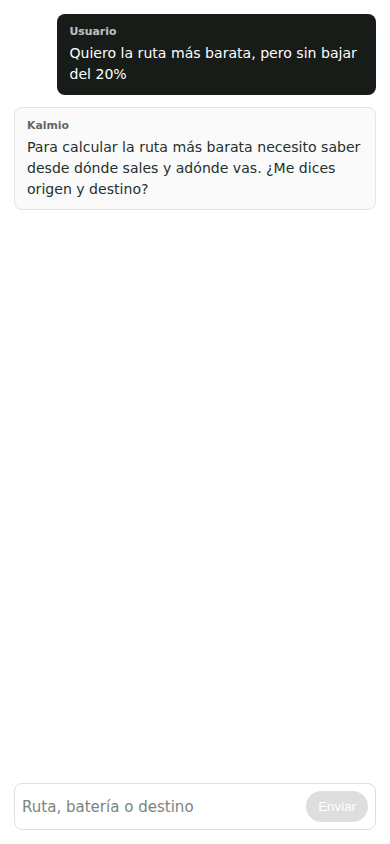
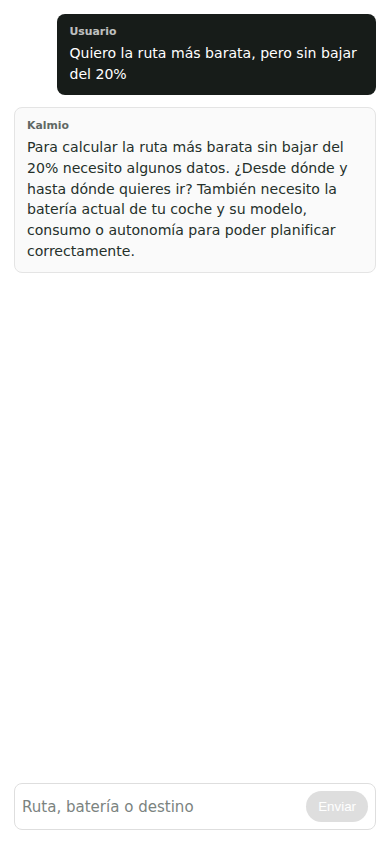
Evaluacion de valor: Caso 011
Aporta valor real- Utilidad: el usuario sabe exactamente que datos enviar para calcular barato + reserva.
- Claridad: no hay comparativa de precio ficticia ni matematica de reserva inventada.
- Confianza: no llama herramientas sin ruta ni datos suficientes.
- Ansiedad de carga: reduce ida y vuelta innecesaria pidiendo todos los datos clave juntos.
- Decision: permite continuar con una peticion completa.
Ultima critica UX: Caso 011
Sin pendientes relevantesAssessment A: revision manual mobile
- El mensaje final cabe en mobile y no queda oculto por el composer.
- La pregunta es directa y no parece formulario largo.
- No se muestran tarjetas de coste o ruta sin datos suficientes.
Assessment B: detector y contrato
- Detector Impeccable sobre archivos tocados:
[]. - Prueba backend dirigida:
16 passed. - Contrato A2UI: validacion de datos criticos; el agente sigue decidiendo el bloque de respuesta.
- Sin problemas relevantes pendientes para este caso.
Verificacion tecnica: Caso 011
OKbackend/.venv/bin/python -m pytest backend/routing/test_route_api.py -k "cheap_route_reserve or cheap_route_with_reserve or hard_arrival_reserve or few_stops_without_vehicle_profile or can_i_arrive_without_charging or future_warning_after_recommended_stop or future_warning_after_alternatives or departure_battery or future_route or unvalidated_margin or default_reserve or chargers_only_route or visible_amenity_proximity or codex_prompt_guides_chargers_only": 16 passed.node .agents/skills/impeccable/scripts/detect.mjs --json backend/routing/agent.py backend/routing/test_route_api.py frontend/src/components/a2ui/a2ui-renderer.tsx frontend/src/index.css:[].- DeepSeek final4: 1 turno, 0 herramientas, salida A2UI valida con 4 componentes.
- Traza final: 2 llamadas LLM, 0 herramientas, coste estimado aproximado
$0.00069007.
Archivos modificados: Caso 011
Caso 011backend/routing/agent.pybackend/routing/test_route_api.pyreports/artifacts/case-011-before-mobile.htmlreports/artifacts/case-011-before-mobile.pngreports/artifacts/case-011-after-mobile.htmlreports/artifacts/case-011-after-mobile.pngreports/ux-testcase-report.html
Caso 012: Evitar cargadores caros
Final: pasaConversacion: Evita cargadores caros si hay alternativas razonables.
Flujo que valida: Kalmio debe tratar precio como preferencia de decision sobre paradas, pedir ruta/ubicacion si falta y no inventar tarifas ni comparativas de coste.
Salida inicial real
La salida inicial solo acusaba recibo y aplazaba la preferencia para futuras busquedas.
AssistantMessage: Entendido, evitaremos cargadores caros si hay alternativas razonables.
Problemas encontrados
- Valor bajo: no pedia ruta, ubicacion ni siguiente dato accionable.
- Confianza: no decia que Kalmio no tiene tarifas de proveedor para comparar costes exactos.
- Producto: precio debe orientar una decision de parada, no quedarse como preferencia abstracta.
Cambios realizados: Caso 012
Acotados al caso- Se guio al agente para preferencias de precio: pedir ruta/ubicacion cuando falte contexto.
- Se reforzo que no debe inventar tarifas/precios ni convertir precio en ruta arriesgada.
- Se agrego validacion de contrato para reparar acuses pasivos sin ruta/ubicacion ni limitacion de tarifas.
- Se agregaron tests de prompt y contrato para esta preferencia.
Resultado final: Caso 012
DeepSeek reejecutadoLa salida final pide ruta/ubicacion y declara que no compara costes exactos sin tarifas de proveedor.
AssistantMessage: Necesito saber tu ruta o ubicacion. No dispongo de tarifas ni precios de los proveedores, por lo que no puedo comparar costes exactos.
Capturas antes/despues: Caso 012
Mobile 390x844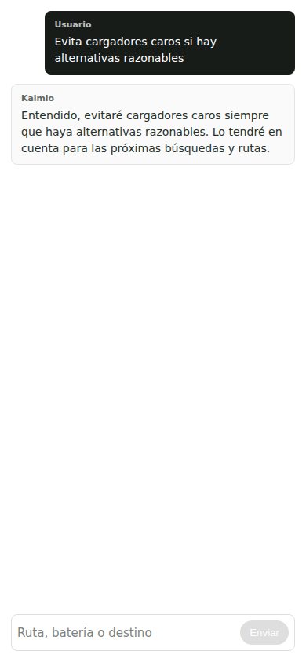
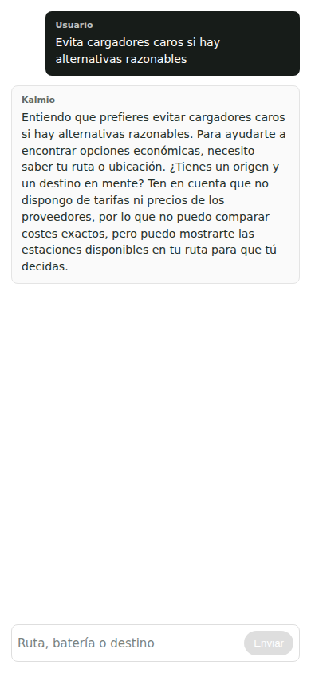
Evaluacion de valor: Caso 012
Aporta valor real- Utilidad: convierte una preferencia abstracta en siguiente paso: ruta o ubicacion.
- Claridad: no promete comparar precios exactos sin tarifas de proveedor.
- Confianza: evita inventar cargadores caros/baratos.
- Ansiedad de carga: mantiene el foco en paradas razonables, no solo en hardware o precio.
- Decision: prepara una futura seleccion de paradas cuando haya contexto.
Ultima critica UX: Caso 012
Sin pendientes relevantesAssessment A: revision manual mobile
- El mensaje final cabe en mobile y no queda oculto.
- La limitacion de tarifas se entiende sin sonar a error tecnico.
- No hay tarjetas de coste ficticias ni recomendaciones sin ruta.
Assessment B: detector y contrato
- Detector Impeccable sobre archivos tocados:
[]. - Prueba backend dirigida:
19 passed. - Contrato A2UI: validacion de copy/precio; el agente conserva la decision de UI.
- Sin problemas relevantes pendientes para este caso.
Verificacion tecnica: Caso 012
OKbackend/.venv/bin/python -m pytest backend/routing/test_route_api.py -k "price_preference or cheap_route_reserve or cheap_route_with_reserve or hard_arrival_reserve or few_stops_without_vehicle_profile or can_i_arrive_without_charging or future_warning_after_recommended_stop or future_warning_after_alternatives or departure_battery or future_route or unvalidated_margin or default_reserve or chargers_only_route or visible_amenity_proximity or codex_prompt_guides_chargers_only": 19 passed.node .agents/skills/impeccable/scripts/detect.mjs --json backend/routing/agent.py backend/routing/test_route_api.py frontend/src/components/a2ui/a2ui-renderer.tsx frontend/src/index.css:[].- DeepSeek final: 1 turno, 0 herramientas, salida A2UI valida con 4 componentes.
- Traza final: 2 llamadas LLM, 0 herramientas, coste estimado aproximado
$0.00102714.
Archivos modificados: Caso 012
Caso 012backend/routing/agent.pybackend/routing/test_route_api.pyreports/artifacts/case-012-before-mobile.htmlreports/artifacts/case-012-before-mobile.pngreports/artifacts/case-012-after-mobile.htmlreports/artifacts/case-012-after-mobile.pngreports/ux-testcase-report.html
Caso 013: Cargar antes o al llegar
Final: pasaConversacion: ¿Me conviene cargar antes de salir o al llegar?.
Flujo que valida: Kalmio debe comparar escenarios de forma conceptual y pedir origen, destino, bateria y datos de vehiculo antes de calcular.
Salida inicial real
La salida inicial pedia datos correctos, pero no comparaba conceptualmente los dos escenarios.
AssistantMessage: Depende de tu ruta y bateria. Dame origen, destino, bateria o modelo.
Problemas encontrados
- Valor bajo: respondia como formulario y no daba criterio de decision.
- UX: el usuario pregunto "conviene"; necesitaba una comparacion breve, no solo datos faltantes.
- Confianza: habia que evitar calculo y mantenerlo conceptual hasta tener ruta/bateria/vehiculo.
Cambios realizados: Caso 013
Acotados al caso- Se guio al agente para comparar conceptualmente cargar antes vs al llegar cuando faltan datos.
- Se reforzo pedir origen, destino, bateria actual y modelo/consumo/autonomia antes de calcular.
- Se agrego test de prompt para este flujo.
Resultado final: Caso 013
DeepSeek reejecutadoLa salida final da criterio conceptual y pide los datos necesarios sin llamar herramientas ni inventar calculos.
AssistantMessage: Cargar antes reduce riesgo si sales bajo, la ruta es larga o no conoces carga en destino. Cargar al llegar puede tener sentido si llegas con margen y hay punto trazado. Pide origen, destino, bateria actual y modelo/consumo/autonomia.
Capturas antes/despues: Caso 013
Mobile 390x844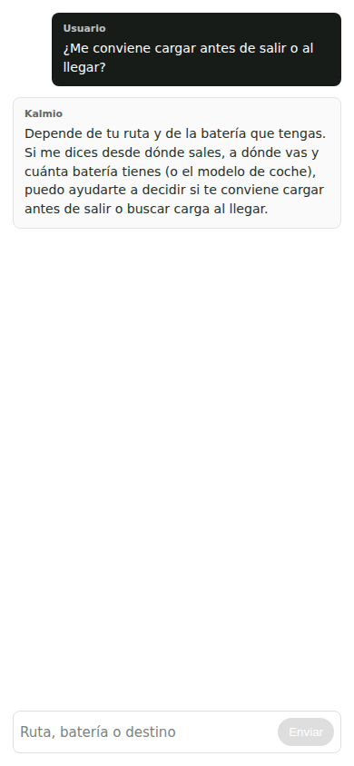
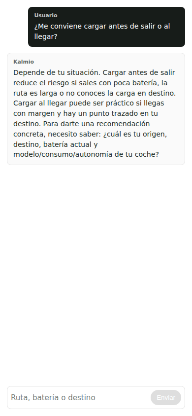
Evaluacion de valor: Caso 013
Aporta valor real- Utilidad: ofrece un marco de decision inmediato.
- Claridad: separa consejo conceptual de calculo pendiente.
- Confianza: no inventa llegada ni disponibilidad en destino.
- Ansiedad de carga: explica por que cargar antes reduce riesgo en ciertos escenarios.
- Decision: pide los datos exactos para pasar de criterio a calculo.
Ultima critica UX: Caso 013
Sin pendientes relevantesAssessment A: revision manual mobile
- El mensaje cabe en mobile y mantiene buena jerarquia.
- La comparacion usa lenguaje condicional, sin falsa precision.
- No aparecen tarjetas ni datos inventados.
Assessment B: detector y contrato
- Detector Impeccable sobre archivos tocados:
[]. - Prueba backend dirigida:
20 passed. - Contrato A2UI: el agente decidio respuesta textual; backend no compuso UI ni calculos.
- Sin problemas relevantes pendientes para este caso.
Verificacion tecnica: Caso 013
OKbackend/.venv/bin/python -m pytest backend/routing/test_route_api.py -k "charge_before_or_after or price_preference or cheap_route_reserve or cheap_route_with_reserve or hard_arrival_reserve or few_stops_without_vehicle_profile or can_i_arrive_without_charging or future_warning_after_recommended_stop or future_warning_after_alternatives or departure_battery or future_route or unvalidated_margin or default_reserve or chargers_only_route or visible_amenity_proximity or codex_prompt_guides_chargers_only": 20 passed.node .agents/skills/impeccable/scripts/detect.mjs --json backend/routing/agent.py backend/routing/test_route_api.py frontend/src/components/a2ui/a2ui-renderer.tsx frontend/src/index.css:[].- DeepSeek final: 1 turno, 0 herramientas, salida A2UI valida con 4 componentes.
- Traza final: 1 llamada LLM, 0 herramientas, coste estimado aproximado
$0.00038706.
Archivos modificados: Caso 013
Caso 013backend/routing/agent.pybackend/routing/test_route_api.pyreports/artifacts/case-013-before-mobile.htmlreports/artifacts/case-013-before-mobile.pngreports/artifacts/case-013-after-mobile.htmlreports/artifacts/case-013-after-mobile.pngreports/ux-testcase-report.html
Caso 014: Cargar lo justo sin pagar de mas
Final: pasaConversacion: Quiero cargar lo justo para llegar, sin pagar de más.
Flujo que valida: Kalmio debe pedir ruta y datos de vehiculo/bateria antes de calcular kWh minimo o coste, sin inventar energia ni precios.
Salida inicial real
La salida inicial pedia origen/destino, pero omitia bateria actual y datos del vehiculo.
AssistantMessage: Para cargar lo justo necesito saber tu origen y destino.
Problemas encontrados
- Faltaban datos criticos para carga minima: bateria actual y modelo/consumo/autonomia.
- Sin esos datos, pedir solo ruta empuja a calculo falso de kWh o coste.
- Habia que validar la peticion sin hacer calculos en backend ni inventar datos.
Cambios realizados: Caso 014
Acotados al caso- Se agrego validacion de contrato para respuestas de "cargar lo justo" que omiten bateria/vehiculo.
- Se mantuvo el backend como validador: no calcula kWh ni decide UI.
- Se agregaron tests de rechazo/aceptacion para carga minima sin contexto suficiente.
Resultado final: Caso 014
DeepSeek reejecutadoLa salida final pide todos los datos necesarios y no inventa energia, coste ni llegada.
AssistantMessage: Necesito origen, destino, bateria actual y modelo/consumo/autonomia para ayudarte a cargar lo justo sin pagar de mas.
Capturas antes/despues: Caso 014
Mobile 390x844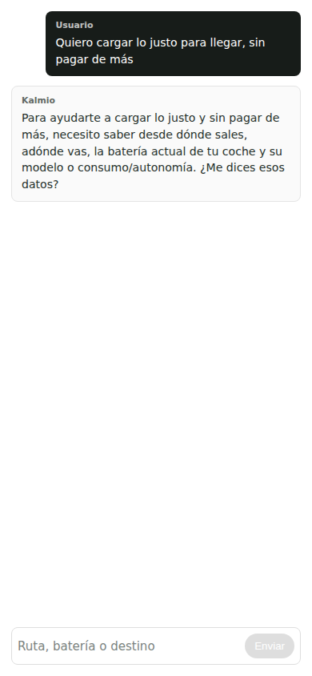
Evaluacion de valor: Caso 014
Aporta valor real- Utilidad: reduce ida y vuelta pidiendo todos los datos de una vez.
- Claridad: no calcula kWh ni coste sin informacion suficiente.
- Confianza: evita prometer ahorro falso.
- Ansiedad de carga: prepara un calculo de carga minima fiable.
- Decision: el usuario sabe que debe aportar ruta, bateria y perfil del coche.
Ultima critica UX: Caso 014
Sin pendientes relevantesAssessment A: revision manual mobile
- Mensaje final breve, visible y accionable en mobile.
- No hay tarjetas de coste o energia ficticias.
- La pregunta no oculta datos criticos necesarios para calcular.
Assessment B: detector y contrato
- Detector Impeccable sobre archivos tocados:
[]. - Prueba backend dirigida:
22 passed. - Contrato A2UI: validacion de contexto minimo; el agente decide el bloque textual.
- Sin problemas relevantes pendientes para este caso.
Verificacion tecnica: Caso 014
OKbackend/.venv/bin/python -m pytest backend/routing/test_route_api.py -k "minimum_charge or charge_before_or_after or price_preference or cheap_route_reserve or cheap_route_with_reserve or hard_arrival_reserve or few_stops_without_vehicle_profile or can_i_arrive_without_charging or future_warning_after_recommended_stop or future_warning_after_alternatives or departure_battery or future_route or unvalidated_margin or default_reserve or chargers_only_route or visible_amenity_proximity or codex_prompt_guides_chargers_only": 22 passed.node .agents/skills/impeccable/scripts/detect.mjs --json backend/routing/agent.py backend/routing/test_route_api.py frontend/src/components/a2ui/a2ui-renderer.tsx frontend/src/index.css:[].- DeepSeek final: 1 turno, 0 herramientas, salida A2UI valida con 4 componentes.
- Traza final: 2 llamadas LLM, 0 herramientas, coste estimado aproximado
$0.00072299.
Archivos modificados: Caso 014
Caso 014backend/routing/agent.pybackend/routing/test_route_api.pyreports/artifacts/case-014-before-mobile.htmlreports/artifacts/case-014-before-mobile.pngreports/artifacts/case-014-after-mobile.htmlreports/artifacts/case-014-after-mobile.pngreports/ux-testcase-report.html
Caso 015: Ruta rapida contra ruta barata
Final: pasaConversacion: Compara ruta rápida contra ruta barata.
Flujo que valida: Kalmio debe pedir origen/destino, datos del vehiculo y costes/tarifas antes de comparar, sin producir una comparativa ficticia.
Salida inicial real
La salida inicial ya cumplio el criterio: pidio ruta y datos de vehiculo, y declaro que no dispone de tarifas de proveedores para inventar precios.
AssistantMessage: Para comparar ruta rapida vs barata necesito origen, destino y datos del vehiculo. No dispongo de tarifas de proveedores, asi que no puedo inventar precios.
Problemas encontrados
- No se encontraron problemas relevantes de UX, copy, trazabilidad o valor.
- No se hicieron cambios de codigo para este caso.
Resultado final: Caso 015
Primera ejecucion validaLa salida final es la salida inicial. No hay calculo falso de precio, tiempo, kWh ni llegada.
Capturas antes/despues: Caso 015
Mobile 390x844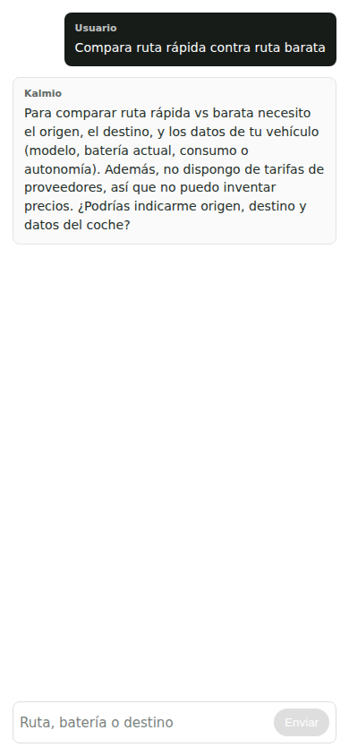

Evaluacion de valor: Caso 015
Aporta valor real- Utilidad: pide todos los datos necesarios para una comparativa real.
- Claridad: explica que no puede inventar precios sin tarifas de proveedor.
- Confianza: no llama herramientas ni muestra comparativas sin contexto.
- Ansiedad de carga: evita falsas promesas de ruta barata o rapida.
- Decision: el siguiente mensaje del usuario puede completar la ruta y el vehiculo.
Ultima critica UX: Caso 015
Sin pendientes relevantesAssessment A: revision manual mobile
- Mensaje claro, completo y visible en mobile.
- No hay cards innecesarias ni datos inventados.
- La limitacion de tarifas se expresa de forma honesta y accionable.
Assessment B: detector y contrato
- Detector Impeccable sobre archivos tocados:
[]. - Sin cambios de codigo especificos para este caso.
- DeepSeek final: 1 turno, 0 herramientas, salida A2UI valida.
Verificacion tecnica: Caso 015
OKnode .agents/skills/impeccable/scripts/detect.mjs --json backend/routing/agent.py backend/routing/test_route_api.py frontend/src/components/a2ui/a2ui-renderer.tsx frontend/src/index.css:[].- DeepSeek inicial/final: 1 turno, 0 herramientas, salida A2UI valida con 4 componentes.
- Traza final: 2 llamadas LLM, 0 herramientas, coste estimado aproximado
$0.00073825.
Archivos modificados: Caso 015
Caso 015reports/artifacts/case-015-before-mobile.htmlreports/artifacts/case-015-before-mobile.pngreports/artifacts/case-015-after-mobile.htmlreports/artifacts/case-015-after-mobile.pngreports/ux-testcase-report.html
Caso 016: Estancia en Córdoba con hotel Meliá
CompletadoConversacion: Me voy 3 días a Córdoba y me quedo en el hotel Meliá.
Flujo que valida: Kalmio debe tratarlo como carga en destino/estancia, buscar puntos autorizados usando Córdoba como aproximacion si no resuelve el hotel exacto, y pedir direccion o zona para afinar.
Salida inicial real
DeepSeek eligio la herramienta correcta, pero la puso dentro de blocks como si fuera un
componente A2UI. El usuario vio un fallback tecnico en lugar de puntos de carga.
AssistantMessage: Voy a buscar puntos de carga cerca de Córdoba para tu estancia de 3 días en el hotel Meliá. ErrorFallbackCard: originalType: tool_call
Problemas encontrados
- P0 UX/A2UI:
tool_calldentro deblocksterminaba como fallback visible. - P1 confianza: la primera reparacion ya mostraba estaciones, pero no aclaraba suficientemente que Córdoba era una aproximacion.
- P1 trazabilidad:
DestinationChargingCardpodia presentarMeliá Córdobacomo destino exacto aunque la herramienta solo habia buscado por ciudad. - P2 copy: listas
risksycontextse normalizaban a texto generico y perdian valor.
Cambios realizados: Caso 016
A2UI backend valida- Normalice llamadas de herramienta mal ubicadas en
final.blocksa untool_callreal antes de renderizar UI. - Refuerce el prompt para que
tool_callnunca aparezca dentro deblocks. - Añadi validacion de trazabilidad para hotel/POI: si la busqueda usa solo ciudad, la UI debe decir aproximacion y pedir direccion/zona/coordenadas para refinar.
- Preserve listas
risksycontextcomo texto visible en tarjetas de riesgo/estancia. - Todo queda dentro de la filosofia A2UI: el agente decide herramienta y UI; Django valida estructura, seguridad, trazabilidad y repara/falla si el contrato no se cumple.
Resultado final: Caso 016
Pasa con DeepSeek
La salida final ejecuta search_destination_chargers, muestra tres puntos trazados cerca de Córdoba,
aclara que no resolvio la ubicacion exacta del hotel Meliá, usa Córdoba como aproximacion y pide direccion o zona concreta.
AssistantMessage: Uso Córdoba como aproximacion porque no he podido resolver la ubicacion exacta del hotel. DestinationChargingCard: Destino Córdoba, confirmacion necesaria. AlternativeStopsList: BALLENOIL-ES336090-COLON; Parking Calle Sevilla Nº5; Hotel Córdoba Center. RiskExplanationCard: Confirmar disponibilidad, tarifas, acceso y direccion/zona para refinar.
Capturas antes/despues: Caso 016
Mobile 390x844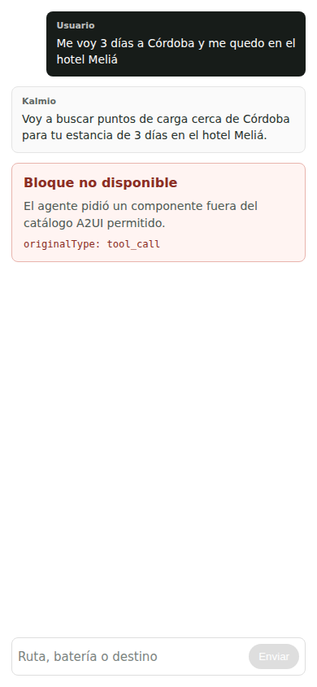
originalType: tool_call, sin estaciones ni plan de estancia.
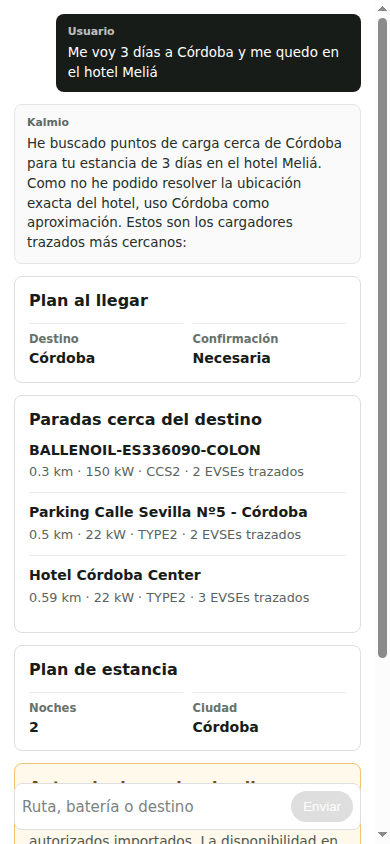
Evaluacion de valor: Caso 016
Aporta valor real- Utilidad: muestra opciones concretas para una estancia de 3 dias en Córdoba.
- Claridad: diferencia ciudad aproximada de hotel exacto no resuelto.
- Confianza: estaciones, distancias, potencia y conectores vienen de herramienta autorizada.
- Ansiedad de carga: reduce incertidumbre al dar un primer plan sin exigir primero la direccion exacta.
- Decision: permite elegir una parada inicial o enviar direccion/zona para refinar.
Ultima critica UX: Caso 016
Sin pendientes relevantesAssessment A: revision manual mobile
- La pantalla final ya muestra el dato clave antes de las paradas: Córdoba es una aproximacion, no hotel exacto.
- La primera pantalla movil contiene destino, confirmacion necesaria y tres opciones trazadas; no hay error tecnico visible.
- La peticion de direccion/zona aparece en el bloque de riesgo; queda parcialmente bajo el fold, pero la incertidumbre principal ya esta visible arriba.
Assessment B: detector y trazas
- Detector Impeccable sobre archivos relevantes:
[]. - Trace analyzer: ultimo run relevante DeepSeek tuvo 3 llamadas LLM, 2 herramientas, 0 guardrails.
- Herramientas validadas:
search_destination_chargerscon 3 stops yresolve_locationsin error.
Verificacion tecnica: Caso 016
OKpytest backend/routing/test_route_api.py -k "misplaced_tool_call or ... or deepseek_decision_parser": 14 passed.python backend/scripts/run_conversation_cases.py --from 16 --to 16 --json: pass.node .agents/skills/impeccable/scripts/detect.mjs --json backend/routing/agent.py backend/routing/test_route_api.py frontend/src/components/a2ui/a2ui-renderer.tsx frontend/src/index.css:[].- Trace final relevante: 20,245 tokens, coste estimado
$0.00252563, 0 errores de herramienta.
Archivos modificados: Caso 016
Caso 016backend/routing/agent.pybackend/routing/test_route_api.pyreports/artifacts/case-016-before-mobile.htmlreports/artifacts/case-016-before-mobile.pngreports/artifacts/case-016-after-mobile.htmlreports/artifacts/case-016-after-mobile.pngreports/artifacts/case-016-final2-turn-1.jsonreports/ux-testcase-report.html
Caso 017: Fin de semana en Granada cerca de la Alhambra
Final: pasaConversacion: Voy el finde a Granada y duermo cerca de la Alhambra.
Flujo que valida: una persona que va a dormir cerca de un POI debe recibir carga de destino/estancia, no una ruta completa. Kalmio debe usar la Alhambra/Granada como aproximacion trazable, mostrar puntos de carga autorizados y advertir que en un viaje futuro de fin de semana la disponibilidad, acceso y tarifas pueden cambiar.
Salida inicial real
DeepSeek llamo la herramienta correcta, pero la respuesta final fue rechazada por contrato: no dejaba suficientemente clara la aproximacion de la Alhambra/zona ni conservaba la advertencia completa de viaje futuro. El usuario termino viendo un fallback sin plan accionable.
AssistantMessage: No he podido cerrar una respuesta fiable con los datos validados. RiskExplanationCard: No he podido completar esta respuesta con fiabilidad. Herramienta inicial: search_destination_chargers -> 3 stops cerca de Alhambra, Granada
Problemas encontrados
- P0 valor: el fallback no daba estaciones, estancia ni siguiente decision util.
- P1 confianza: la UI podia parecer demasiado exacta para un alojamiento "cerca de la Alhambra".
- P1 ansiedad: faltaba una advertencia visible antes de la lista sobre disponibilidad, acceso y tarifas del finde.
- P2 contrato:
StayPlanningCardnecesitaba conservar ciudad y noches/duracion para que el contexto de estancia fuera claro.
Cambios realizados: Caso 017
Backend valida- Refuerce el prompt para el ejemplo Granada/Alhambra: buscar cargadores de destino, advertir disponibilidad/acceso/tarifas si es finde y pedir hotel, zona o direccion exacta para refinar.
- Añadi validacion A2UI para viajes futuros: si el mensaje menciona finde/fecha futura, la advertencia con disponibilidad, acceso y tarifas debe aparecer antes de cualquier lista de paradas.
- Endureci
StayPlanningCardpara que una estancia de finde preserve ciudad y noches/duracion cuando el agente decide mostrar ese componente. - Preserve variantes seguras de copy de estancia como
context,adviceosuggestionsin convertir texto simple en UI enriquecida desde Django. - La correccion se mantiene en filosofia A2UI: DeepSeek decide herramienta, componentes y copy; el backend solo valida catalogo, orden seguro, trazabilidad y reparacion contractual.
Resultado final: Caso 017
Pasa con DeepSeek
La reejecucion final llama search_destination_chargers, muestra carga de destino en Granada,
lista tres puntos trazados cerca de la zona de la Alhambra e incluye contexto de estancia de 2 noches.
AssistantMessage: He buscado puntos de carga cerca de la Alhambra como aproximacion... disponibilidad, acceso y tarifas pueden cambiar antes del viaje. ¿Tienes una direccion o zona exacta donde te alojas para refinar? DestinationChargingCard: destination: Granada needsConfirmation: true AlternativeStopsList: Parking Ave Maria Vistillas, 0.51 km, 22 kW, TYPE2, 2 EVSEs trazados 22XC11M2M03DB01153, 0.75 km, 7 kW, TYPE2, 1 EVSE trazado 22XC11M2M03DB01159, 0.75 km, 7 kW, TYPE2, 1 EVSE trazado StayPlanningCard: city: Granada nights: 2
Capturas antes/despues: Caso 017
Mobile 390x844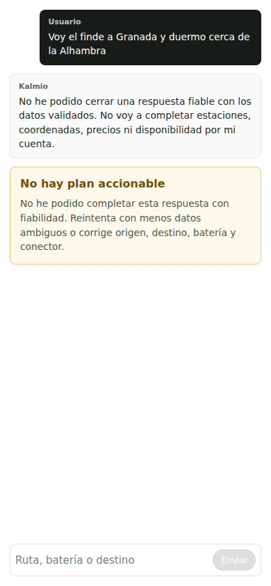
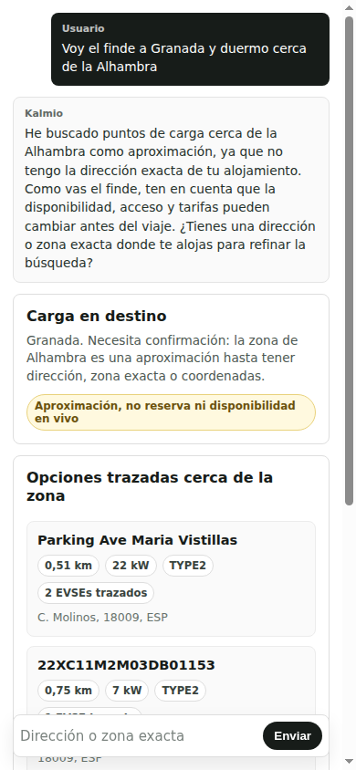
Evaluacion de valor: Caso 017
Aporta valor real- Utilidad: ofrece puntos concretos de carga para una estancia, sin exigir primero la direccion exacta.
- Claridad: separa "cerca de la Alhambra" como aproximacion de un alojamiento exacto no resuelto.
- Confianza: estaciones, distancias, potencias, conectores y coordenadas salen de herramienta; no se inventan precios ni disponibilidad en vivo.
- Ansiedad de carga: reduce incertidumbre con opciones trazadas y una advertencia realista del fin de semana.
- Decision: el usuario puede valorar la zona inicial y sabe que enviar direccion/zona exacta mejora el plan.
Ultima critica UX: Caso 017
Sin pendientes relevantesAssessment A: revision manual mobile
- La jerarquia final responde al trabajo correcto: carga de destino/estancia, no ruta completa.
- La primera pantalla movil muestra la advertencia de fin de semana antes de las estaciones, evitando confianza falsa.
- El copy pide direccion/zona exacta como refinamiento, sin bloquear el valor inicial ni fingir exactitud del hotel.
- La lista de estaciones queda parcialmente bajo el fold, pero el primer resultado y los datos de comparacion principales ya son visibles.
Assessment B: detector y trazas
- Detector Impeccable sobre archivos relevantes:
[]. - Runner de caso:
case 17 ok, componentes esperados y herramientasearch_destination_chargers. - Trace analyzer: 3 llamadas LLM, 1 herramienta, 0 guardrails, modelo
deepseek-v4-flash. - Coste estimado del ultimo run:
$0.00115875.
Verificacion tecnica: Caso 017
OKbackend/.venv/bin/python -m pytest backend/routing/test_route_api.py -k "stay_planning_card or weekend_stay or granada_alhambra or alhambra_destination or future_route or hotel_city_approximation or misplaced_tool_call": 10 passed.backend/.venv/bin/python backend/scripts/run_conversation_cases.py --api-base http://127.0.0.1:8000 --from 17 --to 17 --json: pass.node .agents/skills/impeccable/scripts/detect.mjs --json backend/routing/agent.py backend/routing/test_route_api.py frontend/src/components/a2ui/a2ui-renderer.tsx frontend/src/index.css:[].- Capturas
case-017-before-mobile.pngycase-017-after-mobile.png: viewport movil 390x844.
Archivos modificados: Caso 017
Caso 017backend/routing/agent.pybackend/routing/test_route_api.pyreports/artifacts/case-017-before-mobile.htmlreports/artifacts/case-017-before-mobile.pngreports/artifacts/case-017-after-mobile.htmlreports/artifacts/case-017-after-mobile.pngreports/artifacts/case-017-final2-turn-1.jsonreports/ux-testcase-report.html
Caso 018: Hotel sin cargador en Valencia centro
Final: pasaConversacion: Voy a un hotel sin cargador, necesito cargar durante la estancia + En Valencia centro.
Flujo que valida: Kalmio debe conservar el contexto de hotel sin cargador, pedir solo ciudad/zona cuando falta, buscar carga de destino en Valencia centro y devolver una parada primaria trazada con alternativas, sin inventar disponibilidad, tarifas, coordenadas ni datos del hotel.
Salida inicial real
La primera captura valida que el primer turno pedia ciudad/zona y el segundo llamaba search_destination_chargers.
El problema era UX: con tres paradas trazadas, la respuesta mostraba una lista plana sin decidir una parada primaria.
AssistantMessage: He buscado puntos de carga cerca de Valencia centro... DestinationChargingCard: Valencia centro, needsConfirmation: true AlternativeStopsList: E-V-Valencia-091, E-V-Valencia-076, APK2 Lys StayPlanningCard: Valencia centro RiskExplanationCard: Confirmar acceso, tarifa y disponibilidad.
Problemas encontrados
- P1 decision: una persona con hotel sin cargador necesitaba una recomendacion primaria, no solo una lista para comparar.
- P1 trazabilidad: una iteracion de prompt indujo a DeepSeek a usar Valencia antes de que el usuario la diera; se bloqueo como argumento no grounded.
- P1 contrato: algunos tests antiguos validaban el prompt contextualizado completo y podian confundir texto de sistema con texto real del usuario.
- P2 jerarquia mobile: el aviso de confirmar disponibilidad/acceso/tarifa quedaba despues de una lista plana.
Cambios realizados: Caso 018
A2UI backend valida- Refuerce el prompt: si el usuario dice hotel sin cargador y la herramienta devuelve varias paradas, DeepSeek debe elegir
RecommendedStopCardprimaria con datos trazados y dejar el resto comoAlternativeStopsList. - Añadi validacion de grounding para argumentos de herramientas:
search_destination_chargers.locationy rutas deben estar en mensaje de usuario, historial util o resolucion previa; no pueden venir de ejemplos del prompt. - Corregi el contrato A2UI para que las validaciones de hotel/POI, bateria, futuro y preferencias lean texto de usuario actual + historial de usuario, no todo el prompt contextualizado.
- Actualice tests/fakes para respetar aproximacion de hotel y peticion de direccion/zona cuando la busqueda usa solo ciudad o zona.
- La solucion mantiene A2UI: el agente decide herramienta y UI; el backend valida catalogo, trazabilidad de datos y limites seguros antes de ejecutar o renderizar.
Resultado final: Caso 018
Pasa con DeepSeek
La reejecucion final primero pregunta por ciudad/zona. Con En Valencia centro, llama
search_destination_chargers, devuelve carga de destino, una parada primaria y dos alternativas.
Turno 1: ¿En qué ciudad o zona estará el hotel? Turno 2: DestinationChargingCard: Valencia centro RecommendedStopCard: E-V-Valencia-091, 0.17 km, 100 kW, CCS2 + TYPE2, 4 EVSEs trazados AlternativeStopsList: E-V-Valencia-076; APK2 Lys StayPlanningCard: Valencia centro RiskExplanationCard: confirma acceso final, tarifa y disponibilidad; envia direccion/hotel para refinar.
Capturas antes/despues: Caso 018
Mobile 390x844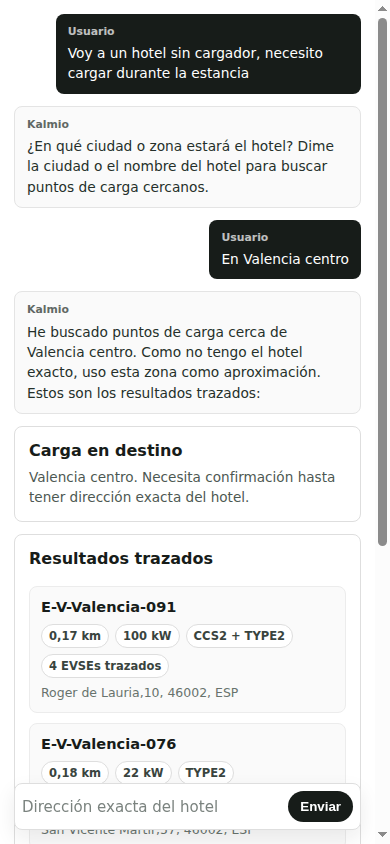
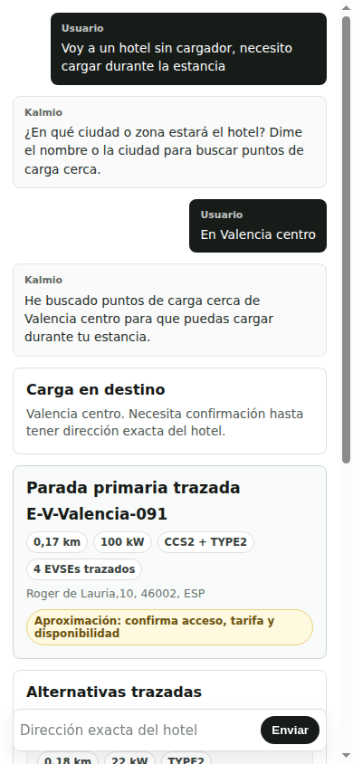
Evaluacion de valor: Caso 018
Aporta valor real- Utilidad: ofrece una opcion principal cerca de la zona de estancia y alternativas de respaldo.
- Claridad: mantiene el contexto de hotel sin cargador y separa zona aproximada de direccion exacta no conocida.
- Confianza: nombres, distancias, potencias, conectores y coordenadas proceden de herramienta autorizada; no hay precios ni disponibilidad inventados.
- Ansiedad de carga: reduce decision fatigue al priorizar E-V-Valencia-091 en vez de obligar a comparar desde cero.
- Decision: el usuario puede tomar una decision inicial y sabe que enviar la direccion/hotel exacto refina el resultado.
Ultima critica UX: Caso 018
Sin pendientes relevantesAssessment A: revision manual mobile
- La primera pregunta es minima y pertinente; no pide origen, ruta ni datos de vehiculo innecesarios.
- La jerarquia final prioriza destino, parada primaria, distancia/potencia/conectores y aviso de confirmacion.
- El primer viewport ya muestra la parada primaria; alternativas quedan debajo como respaldo, no como decision principal.
- No hay claims de disponibilidad en vivo, reserva, tarifa ni exactitud del hotel.
Assessment B: detector y trazas
- Detector Impeccable sobre archivos relevantes:
[]. - Suite routing completa:
122 passed. - Runner de caso 018: pass, componentes esperados y herramienta
search_destination_chargers. - Trace final: 3 llamadas LLM, 1 herramienta, 0 guardrails, coste estimado
$0.00030062.
Verificacion tecnica: Caso 018
OKbackend/.venv/bin/python -m pytest backend/routing/test_route_api.py: 122 passed.backend/.venv/bin/python backend/scripts/run_conversation_cases.py --api-base http://127.0.0.1:8000 --from 18 --to 18 --json: pass.node .agents/skills/impeccable/scripts/detect.mjs --json backend/routing/agent.py backend/routing/test_route_api.py frontend/src/components/a2ui/a2ui-renderer.tsx frontend/src/index.css:[].- Capturas
case-018-before-mobile.pngycase-018-after-mobile.png: viewport movil 390x844.
Archivos modificados: Caso 018
Caso 018backend/routing/agent.pybackend/routing/test_route_api.pyreports/artifacts/case-018-before-mobile.htmlreports/artifacts/case-018-before-mobile.pngreports/artifacts/case-018-after-mobile.htmlreports/artifacts/case-018-after-mobile.pngreports/artifacts/case-018-final3-turn-1.jsonreports/artifacts/case-018-final3-turn-2.jsonreports/ux-testcase-report.html
Caso 019: Una semana en Cadiz
Final: pasaConversacion: Voy una semana a Cádiz y necesito cargar durante la estancia.
Flujo que valida: Kalmio debe tratar la ciudad como ubicacion suficiente para una primera busqueda aproximada de carga de estancia, mostrar contexto de una semana, parada primaria y alternativas, y recordar que acceso, tarifa y disponibilidad deben confirmarse.
Salida inicial real
La salida inicial ya cumplio el flujo: llamo search_destination_chargers, devolvio estancia de
7 noches, parada primaria trazada y dos alternativas.
StayPlanningCard: city: Cádiz nights: 7 RecommendedStopCard: ONCE DZ Cádiz, 0.23 km, 22 kW, TYPE2, 1 EVSE trazado AlternativeStopsList: Cádiz - Canalejas; Repsol, Dársena Cádiz, Puerto RiskExplanationCard: Confirma acceso final, tarifa y disponibilidad.
Problemas encontrados
- No se encontraron problemas relevantes de UX, copy, accesibilidad, responsive o contrato A2UI para este caso.
- La salida no inventa disponibilidad en vivo, tarifas, reserva, coordenadas ni estado del vehiculo.
- La captura before y after es la misma salida validada porque no fue necesario modificar producto para este caso.
Cambios realizados: Caso 019
Sin cambios de producto- No se modifico codigo para el caso 019.
- Se agregaron artefactos visuales y se actualizo este reporte acumulativo.
- Se mantiene la filosofia A2UI: DeepSeek eligio herramienta y componentes; el backend valido catalogo y trazabilidad.
Resultado final: Caso 019
Pasa con DeepSeekLa salida final muestra una primera planificacion de estancia en Cadiz con datos autorizados y accionabilidad suficiente para decidir una zona de carga inicial.
Componentes finales: AssistantMessage StayPlanningCard RecommendedStopCard AlternativeStopsList RiskExplanationCard Herramienta: search_destination_chargers -> 3 stops
Capturas antes/despues: Caso 019
Mobile 390x844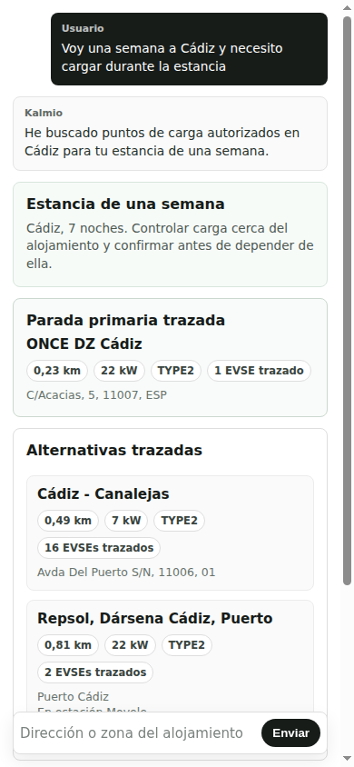

Evaluacion de valor: Caso 019
Aporta valor real- Utilidad: permite empezar una estrategia de carga para una estancia de una semana.
- Claridad: muestra 7 noches, ciudad, parada primaria y alternativas trazadas.
- Confianza: evita claims de disponibilidad, tarifa o reserva; todo punto mostrado viene de herramienta.
- Ansiedad de carga: reduce la incertidumbre con un punto primario y respaldo cercano.
- Decision: el usuario puede usar la parada primaria como referencia y refinar con direccion/zona del alojamiento.
Ultima critica UX: Caso 019
Sin pendientes relevantesAssessment A: revision manual mobile
- La jerarquia es adecuada: necesidad del usuario, estancia, parada primaria, alternativas y riesgo.
- La tarjeta primaria entra en el primer viewport movil y reduce decision fatigue.
- Los nombres largos se parten sin romper el layout; no hay solapamientos ni overflow visible.
- La advertencia de confirmacion es clara y no alarmista.
Assessment B: detector y trazas
- Runner de caso 019: pass, componentes esperados y herramienta
search_destination_chargers. - Trace: 2 llamadas LLM, 1 herramienta, 0 guardrails, coste estimado
$0.00098481. - Detector Impeccable previo sobre archivos relevantes:
[]. - Sin problemas pendientes de UX, copy, accesibilidad o responsive para este caso.
Verificacion tecnica: Caso 019
OKbackend/.venv/bin/python backend/scripts/run_conversation_cases.py --api-base http://127.0.0.1:8000 --from 19 --to 19 --json: pass.backend/.venv/bin/python .agents/skills/kalmio-chat-trace/scripts/analyze_trace.py --last-turns 1 --json: 2 LLM, 1 tool, 0 guardrails.- Capturas
case-019-before-mobile.pngycase-019-after-mobile.png: viewport movil 390x844.
Archivos modificados: Caso 019
Caso 019reports/artifacts/case-019-mobile.htmlreports/artifacts/case-019-before-mobile.pngreports/artifacts/case-019-after-mobile.pngreports/artifacts/case-019-turn-1.jsonreports/ux-testcase-report.html
Caso 020: Córdoba ida y vuelta
Final: pasaConversacion: Voy a Córdoba el viernes y vuelvo el domingo, dónde cargo?.
Flujo que valida: Kalmio debe reconocer viaje redondo, no usar Córdoba como origen y destino, no buscar cargadores aun, y pedir origen/salida con una pregunta estructurada antes de planificar ida y vuelta.
Salida inicial real
La primera salida fallo: DeepSeek intento planificar con Córdoba como origen y destino, luego termino en fallback. El usuario no recibia la pregunta necesaria para continuar.
Trace inicial: plan_route origin: Córdoba plan_route destination: Córdoba planningLevel: chargers_only UI visible: No he podido cerrar una respuesta fiable...
Problemas encontrados
- P0 trazabilidad: se uso la ciudad destino como origen, creando una ruta Córdoba→Córdoba.
- P0 valor: el fallback no permitia avanzar; el dato minimo era origen/salida.
- P1 contrato: el contrato de viaje futuro exigia advertencia aunque la respuesta fuera solo una pregunta aclaratoria.
- P2 A2UI: la respuesta correcta debia usar
ClarifyingQuestionCard, no solo texto.
Cambios realizados: Caso 020
A2UI backend valida- Refuerce el prompt: viajes con ida/vuelta y origen faltante deben usar
ClarifyingQuestionCardpara pedir origen/salida y no llamar herramientas todavia. - Añadi validacion de herramienta:
plan_routeno puede usar la misma ubicacion como origen y destino; debe pedir el origen real. - Ajuste el contrato de viaje futuro: la advertencia de disponibilidad/acceso/tarifas es obligatoria cuando se muestran paradas/ruta, no en una pregunta aclaratoria minima.
- Normalice
RiskExplanationCard.risksingular atextcomo variante segura de props. - Todo se mantiene dentro de A2UI: el agente decide la UI aclaratoria; backend solo valida argumentos y contrato.
Resultado final: Caso 020
Pasa con DeepSeek
La reejecucion final no llama herramientas. Reconoce ida/vuelta y pide origen con
ClarifyingQuestionCard.
AssistantMessage: Veo que es un viaje de ida y vuelta a Córdoba el fin de semana. ¿Desde qué ciudad sales el viernes? ClarifyingQuestionCard: question: ¿Cuál es tu ciudad de origen o salida? field: origin / salida
Capturas antes/despues: Caso 020
Mobile 390x844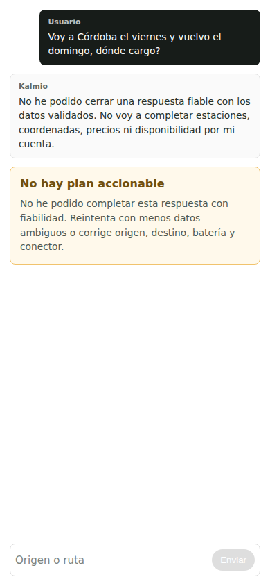
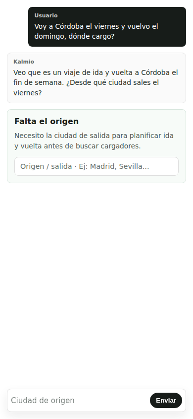
Evaluacion de valor: Caso 020
Aporta valor real- Utilidad: pide exactamente el dato que falta para planificar ida y vuelta.
- Claridad: explica que ha entendido viernes-domingo como viaje redondo a Córdoba.
- Confianza: no inventa origen, coordenadas, paradas, disponibilidad ni tarifas.
- Ansiedad de carga: evita un plan falso y transforma el bloqueo en un siguiente paso claro.
- Decision: el usuario sabe que debe enviar su ciudad de salida antes de recibir paradas.
Ultima critica UX: Caso 020
Sin pendientes relevantesAssessment A: revision manual mobile
- La pantalla final elimina el error generico y da una pregunta concreta.
- El campo estructurado reduce friccion y evita que el usuario escriba bateria/conector innecesariamente.
- La ausencia de paradas es correcta: todavia no hay origen ni ruta validada.
Assessment B: detector y trazas
- Detector Impeccable sobre archivos relevantes:
[]. - Suite routing completa:
126 passed. - Runner de caso 020: pass,
ClarifyingQuestionCard, sin herramientas. - Trace final: 1 llamada LLM, 0 herramientas, 0 guardrails, coste estimado
$0.00055087.
Verificacion tecnica: Caso 020
OKbackend/.venv/bin/python -m pytest backend/routing/test_route_api.py: 126 passed.backend/.venv/bin/python backend/scripts/run_conversation_cases.py --api-base http://127.0.0.1:8000 --from 20 --to 20 --json: pass.node .agents/skills/impeccable/scripts/detect.mjs --json backend/routing/agent.py backend/routing/test_route_api.py frontend/src/components/a2ui/a2ui-renderer.tsx frontend/src/index.css:[].- Capturas
case-020-before-mobile.pngycase-020-after-mobile.png: viewport movil 390x844.
Archivos modificados: Caso 020
Caso 020backend/routing/agent.pybackend/routing/test_route_api.pyreports/artifacts/case-020-before-mobile.htmlreports/artifacts/case-020-before-mobile.pngreports/artifacts/case-020-after-mobile.htmlreports/artifacts/case-020-after-mobile.pngreports/artifacts/case-020-final5-turn-1.jsonreports/ux-testcase-report.html
Caso 021: Comer con niños mientras carga
Final: pasa
Conversacion:
Voy con niños y quiero parar a comer mientras carga + Voy de Madrid a Valencia.
Flujo que valida: Kalmio debe pedir ruta o ubicacion antes de buscar, usar datos trazados cuando la ruta existe, priorizar servicios solo si vienen de herramienta y evitar claims como ideal, seguro, apto para niños o disponibilidad en vivo.
Salida inicial real
Primer turno: pidio origen y destino. Segundo turno: uso plan_route y devolvio ruta,
parada primaria y alternativas con amenities trazados en JSON. La UI, sin embargo, no
mostraba esos servicios y la duracion aparecia como 240 min.
Componentes iniciales: AssistantMessage RouteSummaryCard RiskExplanationCard RecommendedStopCard AlternativeStopsList Herramienta: plan_route, planningLevel=chargers_only
Problemas encontrados
- P1 valor: el usuario pidio comer con niños, pero la tarjeta recomendada no hacia visibles restaurante/cafeteria/supermercado aunque venian trazados.
- P1 confianza: en una reejecucion intermedia el aviso
chargers_onlyquedo despues de alternativas, demasiado tarde para una limitacion critica. - P2 claridad: la ruta podia mostrar
240 minaunque el agente ya enviabadurationText: "4 h 0 min". - P2 responsive: los nombres y detalles necesitaban seguir rompiendo linea sin truncar informacion util.
Cambios realizados: Caso 021
A2UI backend valida- El renderer de
RecommendedStopCardmuestraamenitiescomo chips bajo la etiqueta Servicios trazados. AlternativeStopsListresume servicios trazados por parada sin decir que estan cerca, disponibles, son seguros o aptos para niños.RouteSummaryCardusadurationTextcuando el agente lo proporciona, evitando duraciones largas como minutos crudos.- El contrato A2UI rechaza rutas
chargers_onlydondeRiskExplanationCardaparece despues deAlternativeStopsList. - Se añadieron pruebas backend y frontend. El backend no decide intencion conversacional: solo valida orden, trazabilidad y seguridad del contrato.
Resultado final: Caso 021
Pasa con DeepSeek
La salida final revalidada con sesion correcta pide ruta/zona en el primer turno. Tras recibir Madrid-Valencia, conserva
la preferencia de comer con niños, usa
plan_route, muestra la parada recomendada con servicios trazados, coloca el aviso de
incertidumbre antes de alternativas y no inventa disponibilidad, precios, coordenadas ni estado del coche.
Componentes finales: AssistantMessage RouteSummaryCard RecommendedStopCard RiskExplanationCard AlternativeStopsList Parada primaria: Moya Hub Honrubia, 240 kW, 1.23 km, 3 min amenities trazados: HOTEL, RESTAURANT, PARKING_LOT, FUEL_STATION, WIFI, CAFE, SUPERMARKET, NATURE Aviso: Sin datos de autonomia ni consumo, no se calcula bateria de llegada ni margen.
Capturas antes/despues: Caso 021
Mobile 390x844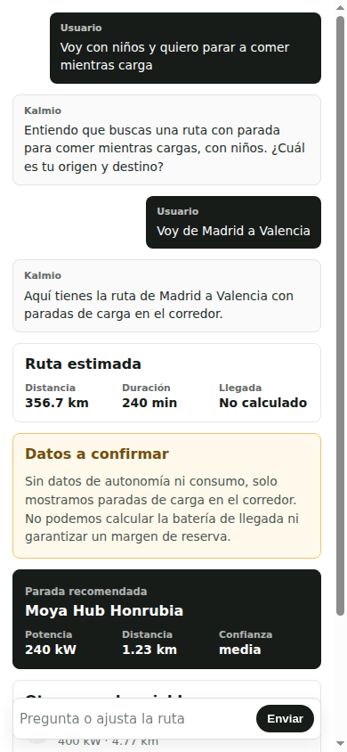
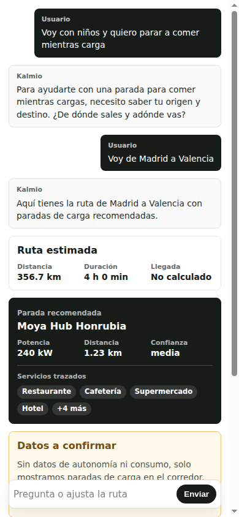
Evaluacion de valor: Caso 021
Aporta valor real- Utilidad: convierte una preferencia familiar/comida en una decision accionable solo cuando existen servicios trazados.
- Claridad: distingue ruta, parada primaria, servicios trazados, incertidumbre y alternativas.
- Confianza: no llama child-friendly, ideal, seguro ni disponible a ninguna parada; los servicios se presentan como datos trazados.
- Ansiedad de carga: reduce incertidumbre con una parada potente y cercana, pero mantiene visible que falta perfil de vehiculo para calcular margen.
- Decision: el usuario puede comparar potencia/distancia y saber si hay restaurante/cafeteria antes de depender de la parada.
Ultima critica UX: Caso 021
Sin pendientes relevantesAssessment A: revision manual mobile
- La primera pantalla final prioriza la decision principal: ruta, parada y servicios trazados aparecen antes de alternativas.
- La etiqueta Servicios trazados evita sobreprometer y encaja con la confianza que exige un viaje con niños.
- La duracion
4 h 0 minse entiende mas rapido que240 min. - Riesgo residual aceptado: las alternativas quedan bajo el pliegue movil, pero la parada primaria y la limitacion critica quedan visibles primero.
Assessment B: detector y trazas
- Detector Impeccable sobre archivos tocados:
[]. - Assessment independence: degraded, sin sub-agentes disponibles en esta sesion; revision secuencial con captura y detector.
- Revalidacion con sesion correcta: conserva “comer con niños” y muestra servicios trazados en la parada primaria.
- Trace final de la revalidacion: 3 llamadas LLM, 1 herramienta
plan_route, 0 guardrails. - Sin problemas pendientes de UX, copy, accesibilidad o responsive para este caso.
Verificacion tecnica: Caso 021
OK- Validacion manual del caso 021: runner local aun no define specs para casos 021-030.
backend/.venv/bin/python -m pytest backend/routing/test_route_api.py: 133 passed tras el caso 022.npm test -- --run src/components/a2ui/a2ui-renderer.test.tsx: 15 passed.node .agents/skills/impeccable/scripts/detect.mjs --json ...:[].- Capturas
case-021-before-mobile.pngycase-021-after-mobile.png: viewport movil 390x844.
Archivos modificados: Caso 021
Caso 021frontend/src/components/a2ui/a2ui-renderer.tsxfrontend/src/components/a2ui/a2ui-renderer.test.tsxbackend/routing/agent.pybackend/routing/test_route_api.pyreports/artifacts/case-021-before-mobile.htmlreports/artifacts/case-021-before-mobile.pngreports/artifacts/case-021-after-mobile.htmlreports/artifacts/case-021-after-mobile.pngreports/artifacts/case-021-recheck-session-turn-1.jsonreports/artifacts/case-021-recheck-session-turn-2.jsonreports/ux-testcase-report.html
Caso 022: Baños y cafeteria cerca de Almansa
Final: pasa
Conversacion:
Busca una parada con baños y cafetería + Estoy cerca de Almansa.
Flujo que valida: Kalmio debe pedir ubicacion/ruta cuando faltan datos, conservar la
preferencia de servicios en el follow-up, buscar en Almansa y explicar que baños/cafeteria no estan
verificados si la herramienta devuelve amenities: [].
Salida inicial real
La primera salida caia a fallback porque el contrato confundia una pregunta aclaratoria con un claim de servicios cercanos. En ejecuciones posteriores, el agente buscaba cargadores pero no advertia que baños/cafeteria no estaban trazados.
Antes: No he podido cerrar una respuesta fiable... Problema posterior: search_destination_chargers Almansa -> amenities: [] UI listaba cargadores sin decir que baños/cafeteria no estaban verificados.
Problemas encontrados
- P1 valor: el fallback no permitia avanzar cuando solo faltaba ubicacion/ruta.
- P1 confianza: se podian mostrar cargadores sin aclarar que baños/cafeteria no estaban verificados.
- P1 continuidad: el follow-up de ubicacion debia conservar la preferencia de servicios, no volver a preguntar el objetivo.
- P2 validacion: el contrato confundia proximidad del cargador con proximidad de servicios.
Cambios realizados: Caso 022
Backend valida- Permiti preguntas aclaratorias de ubicacion aunque mencionen baños/cafeteria, sin relajar claims sobre paradas reales.
- Refuerce el prompt: si el usuario pide servicios y despues aporta ubicacion, conservar preferencia y buscar con
search_destination_chargers. - Añadi validacion: si los servicios pedidos no vienen en
amenities, la respuesta debe decir que no estan verificados. - Ajuste falso positivo: “puntos de carga cerca de Almansa” es valido si la frase de servicios dice explicitamente “no verificados”.
- Corregi el harness manual para recomputar cookies por turno y preservar la misma sesion entre mensajes.
Resultado final: Caso 022
Pasa con DeepSeek
Con sesion correcta, el primer turno pide ubicacion/ruta. El segundo busca en Almansa y muestra cargadores
trazados. Como la herramienta devuelve amenities: [], la UI explica que baños, cafeteria y
restaurante no estan verificados.
Componentes finales: AssistantMessage RecommendedStopCard AlternativeStopsList RiskExplanationCard Parada primaria: Consum Almansa, 100 kW, 0.49 km Aviso: Baños, cafeteria y restaurante no estan verificados en estos resultados. Confirma disponibilidad y acceso antes de depender de ellos.
Capturas antes/despues: Caso 022
Mobile 390x844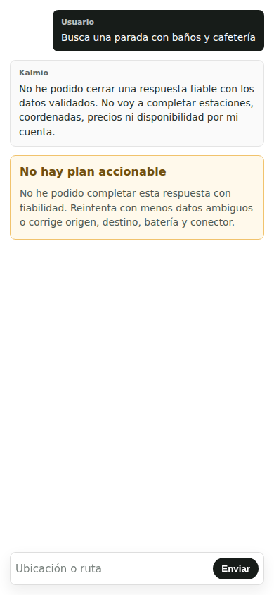
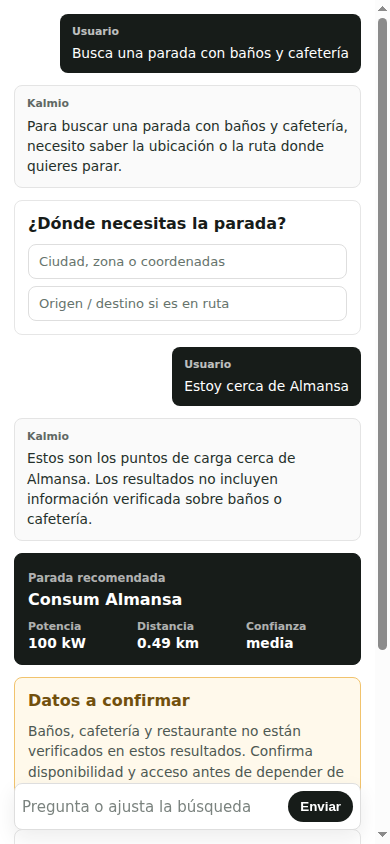
Evaluacion de valor: Caso 022
Aporta valor real- Utilidad: ofrece cargadores concretos cerca de Almansa y evita prometer servicios no trazados.
- Claridad: separa la parada recomendada, alternativas y la advertencia de servicios no verificados.
- Confianza: no inventa baños/cafeteria; los marca como no verificados porque la herramienta trae
amenities: []. - Ansiedad de carga: reduce incertidumbre de carga con tres opciones, pero no reduce falsamente la incertidumbre de comodidad.
- Decision: el usuario puede decidir usar un cargador o pedir otra zona si baños/cafeteria son imprescindibles.
Ultima critica UX: Caso 022
Sin pendientes relevantesAssessment A: revision manual mobile
- La experiencia final transforma una preferencia ambigua en un flujo claro: pedir ubicacion, buscar, advertir limite de servicios.
- La advertencia aparece antes de que el usuario dependa de la parada para comer o usar baños.
- No hay claims de “cerca” aplicados a baños/cafeteria; la cercania solo describe los puntos de carga.
- Riesgo residual aceptado: las alternativas quedan bajo el pliegue, pero la parada primaria y la limitacion clave entran en el viewport movil.
Assessment B: detector y trazas
- Detector Impeccable sobre archivos tocados:
[]. - Trace final: 3 llamadas LLM, 1 herramienta
search_destination_chargers, 0 guardrails, coste estimado$0.00120638. - Assessment independence: degraded, sin sub-agentes disponibles en esta sesion; revision secuencial con captura y detector.
- Sin problemas pendientes de UX, copy, accesibilidad o responsive para este caso.
Verificacion tecnica: Caso 022
OK- Validacion manual del caso 022: runner local aun no define specs para casos 021-030.
backend/.venv/bin/python -m pytest backend/routing/test_route_api.py: 133 passed.npm test -- --run src/components/a2ui/a2ui-renderer.test.tsx: 15 passed.node .agents/skills/impeccable/scripts/detect.mjs --json ...:[].- Capturas
case-022-before-mobile.pngycase-022-after-mobile.png: viewport movil 390x844.
Archivos modificados: Caso 022
Caso 022backend/routing/agent.pybackend/routing/test_route_api.pyreports/artifacts/case-022-before-mobile.htmlreports/artifacts/case-022-before-mobile.pngreports/artifacts/case-022-after-mobile.htmlreports/artifacts/case-022-after-mobile.pngreports/artifacts/case-022-final-session-turn-1.jsonreports/artifacts/case-022-final-session-turn-2.jsonreports/ux-testcase-report.html
Caso 023: Evitar sitios solitarios de noche
Final: pasa
Conversacion:
No quiero cargar en sitios solitarios de noche + Estoy en Valencia centro.
Flujo que valida: Kalmio debe pedir ubicacion cuando falta, conservar la preferencia de seguridad nocturna, buscar puntos autorizados en la ubicacion aportada y no prometer seguridad, vigilancia, iluminacion, afluencia ni ausencia de soledad si esos datos no vienen trazados.
Salida inicial real
La salida inicial buscaba cargadores en Valencia centro y mostraba una parada primaria, pero dejaba el aviso de seguridad despues de las alternativas. Ademas, el copy inferia afluencia/probabilidad desde la ubicacion centrica.
Antes: RecommendedStopCard E-V-Valencia-091 AlternativeStopsList RiskExplanationCard Copy problematico: "zona centrica con mas afluencia" "es menos probable que sean solitarios"
Problemas encontrados
- P1 confianza: "mas afluencia" y "menos probable que sean solitarios" son inferencias no trazadas.
- P1 mobile: el aviso de seguridad quedaba bajo alternativas y parcialmente tapado por el composer.
- P2 coste/latencia: una iteracion intermedia repetia la misma herramienta y dependia del guardrail.
- P2 validacion: el primer validador rechazaba disclaimers negativos con "vigilancia"; se acoto a claims positivos.
Cambios realizados: Caso 023
Backend valida- Refuerzo del prompt: seguridad nocturna pide ubicacion/ruta si falta; con ciudad/zona/coordenadas llama
search_destination_chargers. - El prompt prohibe usar seguridad, vigilancia, iluminacion, afluencia o actividad como criterio positivo no trazado.
- Nueva validacion A2UI de copy para rechazar inferencias de seguridad nocturna no trazadas.
- Nueva validacion de orden: si hay alternativas y preferencia nocturna,
RiskExplanationCarddebe aparecer antes deAlternativeStopsList. - Instruccion post-herramienta: con resultados de estaciones ya trazados, no repetir la misma busqueda; devolver
type=final. - Tests unitarios para prompt, claims no trazados, orden del riesgo y disclaimers negativos permitidos.
Resultado final: Caso 023
Pasa con DeepSeek
El primer turno pide el dato minimo sin prometer afluencia. El segundo turno conserva la preferencia,
llama search_destination_chargers en Valencia centro y muestra el limite de seguridad antes
de la parada recomendada y de las alternativas.
Componentes finales: AssistantMessage RiskExplanationCard RecommendedStopCard AlternativeStopsList Parada primaria: E-V-Valencia-091, 100 kW, 0.17 km Aviso: No validamos seguridad, vigilancia ni actividad en los puntos mostrados. Confirma el entorno al llegar de noche.
Capturas antes/despues: Caso 023
Mobile 390x844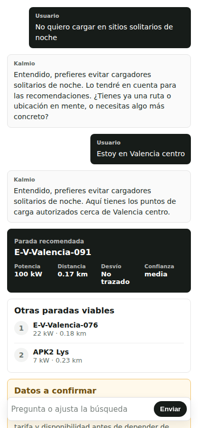
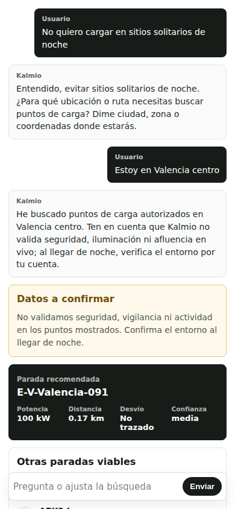
Evaluacion de valor: Caso 023
Aporta valor real- Utilidad: ofrece puntos de carga concretos cerca de Valencia centro y conserva la preocupacion nocturna.
- Claridad: separa hechos trazados de limites no trazados; el usuario sabe que debe evaluar el entorno.
- Confianza: no inventa seguridad, iluminacion, vigilancia, afluencia ni estado del entorno.
- Ansiedad de carga: reduce incertidumbre de carga sin crear falsa seguridad personal.
- Decision: permite elegir una parada por distancia/potencia o pedir otra zona si el entorno nocturno no convence.
Ultima critica UX: Caso 023
Sin pendientes relevantesAssessment A: revision manual mobile
- La version final resuelve la ansiedad correcta: seguridad percibida de noche, sin sobreprometer.
- La advertencia aparece antes de la recomendacion y de alternativas, por lo que entra en el primer viewport movil.
- El copy evita "seguro", "afluencia", "concurrido" o "menos solitario" como claims positivos.
- Riesgo residual aceptado: no se puede validar entorno fisico en vivo; la UI lo dice claramente.
Assessment B: detector y trazas
- Detector Impeccable sobre archivos tocados:
[]. - Detector sobre maqueta HTML final: solo aviso de jerarquia tipografica plana del artefacto estatico; no pendiente de producto.
- Trace final: 3 llamadas LLM, 1 herramienta
search_destination_chargers, 0 guardrails, coste estimado$0.00115316. - Assessment independence: degraded, sin sub-agentes disponibles; revision secuencial con captura mobile, snapshot Orca y detector.
Verificacion tecnica: Caso 023
OK- Validacion manual del caso 023: runner local aun no define specs para casos 021-030.
backend/.venv/bin/python -m pytest backend/routing/test_route_api.py: 137 passed.node .agents/skills/impeccable/scripts/detect.mjs --json backend/routing/agent.py backend/routing/test_route_api.py frontend/src/components/a2ui/a2ui-renderer.tsx frontend/src/components/a2ui/a2ui-renderer.test.tsx:[].- Capturas
case-023-before-mobile.pngycase-023-after-mobile.png: viewport movil 390x844. - Orca Browser abrio la captura final y el snapshot confirma el orden: mensaje, riesgo, recomendacion, alternativas.
Archivos modificados: Caso 023
Caso 023backend/routing/agent.pybackend/routing/test_route_api.pyreports/artifacts/case-023-before-mobile.htmlreports/artifacts/case-023-before-mobile.pngreports/artifacts/case-023-after-mobile.htmlreports/artifacts/case-023-after-mobile.pngreports/artifacts/case-023-final4-turn-1.jsonreports/artifacts/case-023-final4-turn-2.jsonreports/ux-testcase-report.html
Caso 024: Desvio controlado por comodidad
Final: pasa
Conversacion:
Prefiero desviarme 10 minutos si el sitio es más cómodo. Voy de Madrid a Valencia con 60%.
Flujo que valida: Kalmio debe usar ruta, aceptar el desvio como preferencia de decision, mostrar datos trazados de paradas y servicios, y no convertir amenities en una promesa de comodidad.
Salida inicial real
La primera salida llamo plan_route y mostro una parada primaria dentro del margen de desvio,
pero el copy y el renderer aun dejaban huecos para decidir: alternativas sin desvio visible y frases con
comodidad/margen demasiado afirmativas.
Antes: RouteSummaryCard RecommendedStopCard Moya Hub Honrubia RiskExplanationCard AlternativeStopsList Problemas: "buenos servicios" "Cargar aqui puede ayudarte..." alternativas sin detourMin visible
Problemas encontrados
- P1 decision: las alternativas no mostraban desvio, aunque el usuario decide por desvio maximo.
- P1 confianza: "buenos servicios" convertia amenities en valoracion subjetiva.
- P1 margen: "te ayudara/puede ayudarte" necesitaba quedar como posibilidad no validada, no certeza.
- P2 foco: una salida intermedia introdujo "pocas paradas", preferencia que el usuario no habia pedido.
Cambios realizados: Caso 024
Backend valida + renderer- Refuerzo de prompt para preferencias de desvio/comodidad: servicios trazados como comodidad potencial, sin "buenos servicios" ni "mas comodo" garantizado.
- Validacion A2UI contra claims subjetivos de servicios y certeza de margen en rutas
chargers_only. - Validacion contra copy de "pocas paradas" cuando el usuario no pidio esa preferencia.
- Renderer:
AlternativeStopsListahora muestradetourMincuando viene trazado. - Tests backend y frontend para desvio, margen, servicios subjetivos y desvio visible en alternativas.
Resultado final: Caso 024
Pasa con DeepSeek
La respuesta final usa plan_route, muestra distancia/duracion trazadas, parada primaria con
desvio de 3 min y amenities como servicios trazados. El aviso dice que bateria/reserva no estan validadas
sin autonomia/consumo, y las alternativas exponen su desvio para comparar.
Componentes finales: RouteSummaryCard RecommendedStopCard RiskExplanationCard AlternativeStopsList Parada primaria: Moya Hub Honrubia, 240 kW, 1.23 km, desvio 3 min Alternativas: Aparcamiento CTM, desvio 11 min V-VALENCIA-022-2, desvio 4 min
Capturas antes/despues: Caso 024
Mobile 390x844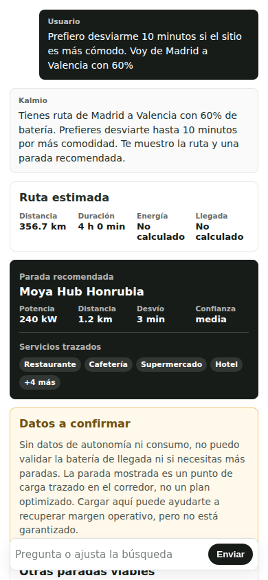
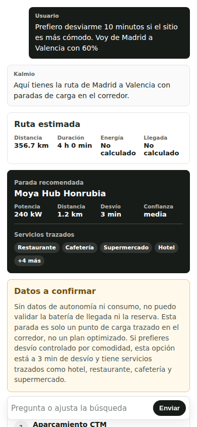
Evaluacion de valor: Caso 024
Aporta valor real- Utilidad: da ruta y parada concreta, con potencia, distancia, desvio y servicios trazados.
- Claridad: distingue comodidad potencial de comodidad garantizada.
- Confianza: no inventa bateria de llegada, consumo, reserva ni calidad del sitio.
- Ansiedad de carga: reduce la decision a una parada primaria viable y limites claros.
- Decision: permite comparar si 3 min de desvio y servicios trazados compensan frente a alternativas.
Ultima critica UX: Caso 024
Sin pendientes relevantesAssessment A: revision manual mobile
- La informacion decisiva entra en el primer viewport: ruta, parada, desvio 3 min, servicios trazados y limite de bateria/reserva.
- Las alternativas quedan bajo el pliegue, pero son secundarias; el snapshot Orca confirma que incluyen desvio cuando se leen.
- El copy final no promete "sitio comodo"; formula amenities como servicios trazados.
- Riesgo residual aceptado: sin perfil de vehiculo no puede optimizar paradas ni validar margen.
Assessment B: detector y trazas
- Detector Impeccable sobre archivos tocados:
[]. - Detector sobre maqueta HTML final: solo aviso de jerarquia tipografica plana del artefacto estatico; no pendiente de producto.
- Trace final: 3 llamadas LLM, 1 herramienta
plan_route, 0 guardrails, coste estimado$0.00294569. - Hubo una reparacion A2UI para retirar copy subjetivo; la respuesta final validada no deja problemas relevantes.
Verificacion tecnica: Caso 024
OKbackend/.venv/bin/python -m pytest backend/routing/test_route_api.py: 142 passed.npm test -- --run src/components/a2ui/a2ui-renderer.test.tsx: 15 passed.node .agents/skills/impeccable/scripts/detect.mjs --json ...:[]sobre archivos de producto.- Capturas
case-024-before-mobile.pngycase-024-after-mobile.png: viewport movil 390x844. - Orca Browser abrio la captura final y el snapshot confirma desvio en alternativa:
Desvio 11 minyDesvio 4 min.
Archivos modificados: Caso 024
Caso 024backend/routing/agent.pybackend/routing/test_route_api.pyfrontend/src/components/a2ui/a2ui-renderer.tsxfrontend/src/components/a2ui/a2ui-renderer.test.tsxreports/artifacts/case-024-before-mobile.htmlreports/artifacts/case-024-before-mobile.pngreports/artifacts/case-024-after-mobile.htmlreports/artifacts/case-024-after-mobile.pngreports/artifacts/case-024-final3-turn-1.jsonreports/ux-testcase-report.html
Caso 025: Restaurante y cargadores rapidos en ruta
Final: pasa sin cambios
Conversacion:
Quiero parar donde haya restaurante y cargadores rápidos. Voy de Madrid a Valencia con 60%.
Flujo que valida: Kalmio debe combinar ruta, potencia alta y restaurante usando datos
trazados. Si no hubiera servicios, deberia decirlo; en esta ejecucion la herramienta si devuelve
RESTAURANT en la parada primaria.
Salida inicial real
La salida inicial ya cumple: llama plan_route, recomienda Moya Hub Honrubia con 240 kW,
desvio 3 min y amenities trazados con restaurante. El riesgo conserva la limitacion de autonomia/consumo.
Componentes: RouteSummaryCard RecommendedStopCard RiskExplanationCard AlternativeStopsList Parada primaria: Moya Hub Honrubia 240 kW amenities: RESTAURANT, CAFE, WIFI, SUPERMARKET
Problemas encontrados
- No se encontraron problemas relevantes de UX, factualidad o A2UI en la salida inicial.
- La palabra "rapidos" esta respaldada por
powerKw: 240en la parada primaria. - "Restaurante" esta respaldado por
amenities: ["RESTAURANT"]. - El aviso de bateria/margen evita inventar autonomia, consumo o llegada.
Cambios realizados: Caso 025
Sin cambios de producto- No se modifico backend ni frontend para este caso.
- Se generaron artefactos y capturas mobile antes/despues; ambas representan la misma salida validada.
- Se documento que el caso pasa con datos trazados de ruta, potencia y restaurante.
Resultado final: Caso 025
Pasa con DeepSeekLa UI final muestra ruta Madrid-Valencia, Moya Hub Honrubia como parada recomendada, 240 kW, desvio de 3 min y servicios trazados donde aparece Restaurante. Las alternativas tambien exponen potencia, desvio y servicios trazados.
Trace final: 2 llamadas LLM 1 herramienta plan_route 0 guardrails Decision: La parada principal combina cargador rapido + restaurante trazado.
Capturas antes/despues: Caso 025
Mobile 390x844
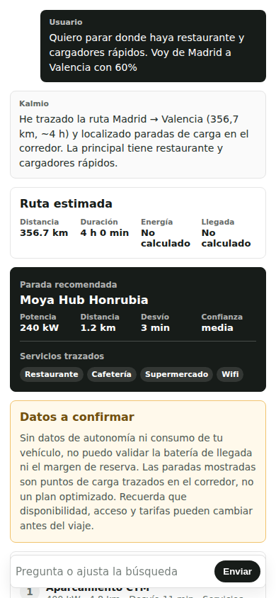
Evaluacion de valor: Caso 025
Aporta valor real- Utilidad: resuelve la peticion exacta: parada en ruta con restaurante y cargador rapido.
- Claridad: potencia, desvio y servicios trazados aparecen junto a la parada principal.
- Confianza: no inventa restaurante ni potencia; ambos vienen de herramienta.
- Ansiedad de carga: reduce incertidumbre con parada y alternativas, manteniendo limites de bateria/margen.
- Decision: el usuario puede decidir parar en Moya Hub Honrubia o comparar alternativas con desvio visible.
Ultima critica UX: Caso 025
Sin pendientes relevantesAssessment A: revision manual mobile
- La primera pantalla muestra el objetivo del usuario, la ruta, la parada primaria, potencia y restaurante trazado.
- La advertencia de autonomia/reserva esta presente sin desplazar el valor principal.
- No hay claims de disponibilidad en vivo, precio, reserva ni calidad subjetiva del restaurante.
- Riesgo residual aceptado: disponibilidad, acceso y tarifas requieren confirmacion externa.
Assessment B: detector y trazas
- Detector sobre maqueta HTML final: solo aviso de jerarquia tipografica plana del artefacto estatico; no pendiente de producto.
- Trace final: 2 llamadas LLM, 1 herramienta
plan_route, 0 guardrails, coste estimado$0.00123113. - Snapshot Orca confirma: 240 kW, Restaurante, desvio 3 min y alternativas con desvio visible.
- Assessment independence: degraded, sin sub-agentes disponibles; revision secuencial con captura mobile, snapshot Orca y detector.
Verificacion tecnica: Caso 025
OK- Validacion manual del caso 025: pasa con DeepSeek.
- Ultima suite completa tras los cambios del caso 024:
backend/.venv/bin/python -m pytest backend/routing/test_route_api.py: 142 passed. - Ultimo test renderer tras los cambios del caso 024:
npm test -- --run src/components/a2ui/a2ui-renderer.test.tsx: 15 passed. - Capturas
case-025-before-mobile.pngycase-025-after-mobile.png: viewport movil 390x844.
Archivos modificados: Caso 025
Caso 025reports/artifacts/case-025-before-mobile.htmlreports/artifacts/case-025-before-mobile.pngreports/artifacts/case-025-after-mobile.htmlreports/artifacts/case-025-after-mobile.pngreports/artifacts/case-025-initial-turn-1.jsonreports/ux-testcase-report.html
Caso 026: Coche limitado a 100 kW
Final: pasa tras correccion
Conversacion:
Mi coche carga máximo a 100 kW, no necesito ultrarrápidos. Voy de Madrid a Valencia con 60%.
Flujo que valida: Kalmio debe pasar preferences.max_useful_power_kw=100
a plan_route, no sobrevalorar potencia que el coche no aprovecha y mantener la incertidumbre de
autonomia/llegada sin inventar consumo ni estado del vehiculo.
Salida inicial real
La salida inicial llamo plan_route con max_useful_power_kw=100 y mostro una
parada trazada. El problema fue de copy: decia "he filtrado paradas" aunque la recomendacion visible era
Moya Hub Honrubia con 240 kW.
Componentes: RouteSummaryCard RecommendedStopCard RiskExplanationCard AlternativeStopsList Herramienta: plan_route.preferences.max_useful_power_kw = 100 Problema visible: "he filtrado paradas..." + tarjeta con 240 kW
{kind=link}
Problemas encontrados
- El copy inicial sugeria un filtro duro por potencia, pero se mostraba una estacion de 240 kW.
- La aclaracion de que el coche no aprovecha mas de 100 kW llegaba despues de la tarjeta principal.
- Eso podia hacer que el usuario interpretara 240 kW como una ventaja falsa o pensara que Kalmio ignoro su coche.
- No hubo invencion de estaciones, coordenadas, disponibilidad, precios ni estado del vehiculo.
Cambios realizados: Caso 026
Backend valida copy trazable- Se ajusto el prompt para pedir que, si una estacion supera el maximo util del coche, la aclaracion aparezca antes de la primera parada.
- Se anadio validacion A2UI: con
max_useful_power_kwy una estacion por encima del limite, no se acepta copy de "filtrado/excluido" ni aclaracion tardia. - Se anadieron tests de contrato para rechazar el copy contradictorio y permitir el copy correcto sin convertir al backend en parser de intencion.
- La logica respeta A2UI: el agente sigue decidiendo herramienta y bloques; Django solo valida coherencia, trazabilidad y seguridad antes de entregar UI.
Resultado final: Caso 026
Pasa con DeepSeek
La salida final llama plan_route con max_useful_power_kw=100, muestra Moya Hub
Honrubia como punto trazado y dice antes de la tarjeta que la potencia superior no se aprovecha. El riesgo
mantiene que no se puede validar bateria de llegada ni reserva sin autonomia/consumo.
Trace final: 3 llamadas LLM 1 herramienta plan_route 0 guardrails Coste estimado: $0.00322455 Copy final clave: Tu coche carga maximo a 100 kW, asi que la potencia superior de la estacion recomendada no se aprovecha.
Capturas antes/despues: Caso 026
Mobile 390x844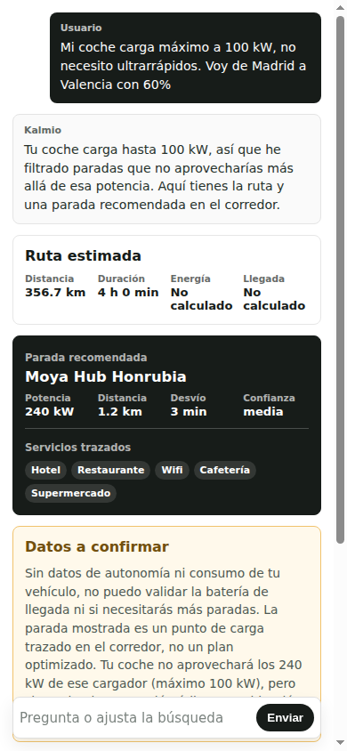
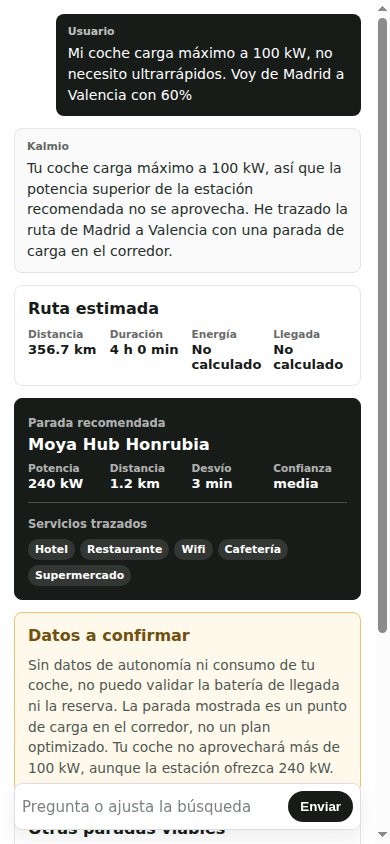
Evaluacion de valor: Caso 026
Aporta valor real- Utilidad: respeta el limite de carga util del coche en la llamada de herramienta.
- Claridad: explica antes de la recomendacion que 240 kW no significa 240 kW aprovechables.
- Confianza: evita un falso reclamo de filtrado y mantiene los datos trazados.
- Ansiedad de carga: reduce dudas sobre si Kalmio entendio el vehiculo y conserva el aviso de autonomia/reserva no validada.
- Decision: el usuario puede elegir la parada por ubicacion, desvio y servicios, no por potencia inutil para su coche.
Ultima critica UX: Caso 026
Sin pendientes relevantesAssessment A: revision manual mobile
- La primera pantalla ahora reconoce el limite de 100 kW antes de mostrar la tarjeta de 240 kW.
- La tarjeta conserva potencia, distancia, desvio y servicios trazados sin prometer disponibilidad en vivo.
- El RiskExplanationCard mantiene incertidumbre de llegada/reserva y no inventa autonomia, consumo ni estado del vehiculo.
- Riesgo residual aceptado: la potencia de la estacion sigue visible como dato tecnico trazado, no como ventaja del coche.
Assessment B: detector y trazas
- Detector sobre archivos de producto: sin findings.
- Detector sobre maqueta HTML final: solo aviso de jerarquia tipografica plana del artefacto estatico; no pendiente de producto.
- Trace final: DeepSeek
deepseek-v4-flash, 3 llamadas LLM, 1plan_route, 0 guardrails, coste estimado$0.00322455. - Assessment independence: degraded, sin sub-agentes disponibles; revision secuencial con captura mobile, detector y trazas.
Verificacion tecnica: Caso 026
OKbackend/.venv/bin/python -m pytest backend/routing/test_route_api.py -k "max_useful_power or hard_power_filter": 4 passed.backend/.venv/bin/python -m pytest backend/routing/test_route_api.py: 144 passed.npm test -- --run src/components/a2ui/a2ui-renderer.test.tsx: 15 passed.- Capturas
case-026-before-mobile.pngycase-026-after-mobile.png: viewport movil 390x844.
Archivos modificados: Caso 026
Caso 026backend/routing/agent.pybackend/routing/test_route_api.pyreports/artifacts/case-026-before-mobile.htmlreports/artifacts/case-026-before-mobile.pngreports/artifacts/case-026-after-mobile.htmlreports/artifacts/case-026-after-mobile.pngreports/artifacts/case-026-final2-turn-1.jsonreports/artifacts/case-026-final2-summary.jsonreports/ux-testcase-report.html
Caso 027: Evitar puntos con un solo conector
Final: pasa tras correccion
Conversacion:
Evita cargadores con un solo conector. Estoy en Córdoba....
Flujo que valida: Kalmio debe buscar puntos autorizados en Cordoba, priorizar una parada que no sea de un solo EVSE/conector cuando los datos lo soportan, y no convertir EVSEs trazados en disponibilidad en vivo ni en conteo de conectores no trazado.
Salida inicial real
La salida inicial uso search_destination_chargers y eligio una primaria con
availableEvses=2. El problema fue de experiencia: la tarjeta no mostraba ese dato clave y
el copy decia "al menos 2 conectores" aunque la herramienta devolvia EVSEs trazados, no un conteo de conectores.
Componentes: RecommendedStopCard AlternativeStopsList RiskExplanationCard Herramienta: search_destination_chargers(Cordoba) Primaria inicial: BALLENOIL-ES336090-COLON availableEvses: 2 connectorTypes: CCS2
{kind=link}
Problemas encontrados
- La primera pantalla no exponia el dato que justificaba la preferencia del usuario: EVSEs trazados.
- El copy confundia EVSEs con "conectores", creando una afirmacion no trazada.
- El usuario no podia decidir con confianza si Kalmio habia respetado "evitar un solo conector".
- No hubo invencion de estaciones, coordenadas, precios ni disponibilidad en vivo.
Cambios realizados: Caso 027
EVSEs visibles y copy trazable- El renderer muestra
availableEvsescomoEVSEsenRecommendedStopCardcuando el dato existe. AlternativeStopsListincluyeEVSEs trazadosen los detalles de cada alternativa.- El prompt indica que
availableEvsesdebe llamarse EVSEs trazados y que "conectores" solo se use con datos de conectores trazados. - La validacion A2UI rechaza copy que convierta
availableEvsesen conteo de conectores y rechaza una primaria de 1 EVSE si hay alternativas multi-EVSE. - Se anadieron tests backend y renderer para cubrir el contrato sin introducir parsers de intencion conversacional.
Resultado final: Caso 027
Pasa con DeepSeekLa salida final usa Cordoba como ubicacion trazada, devuelve BALLENOIL-ES336090-COLON como primaria con 2 EVSEs trazados y muestra alternativas con 2 y 3 EVSEs trazados. El aviso mantiene que acceso, tarifa y disponibilidad deben confirmarse.
Trace final: 2 llamadas LLM 1 herramienta search_destination_chargers 0 guardrails Coste estimado: $0.00190071 Copy final clave: Todas las estaciones tienen mas de un EVSE trazado.
Capturas antes/despues: Caso 027
Mobile 390x844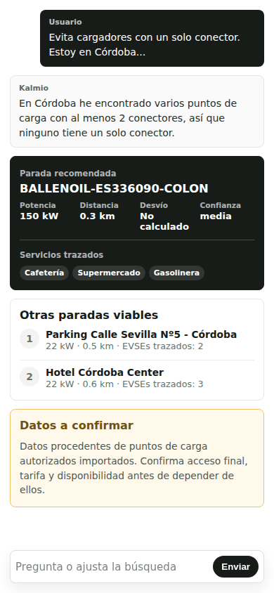
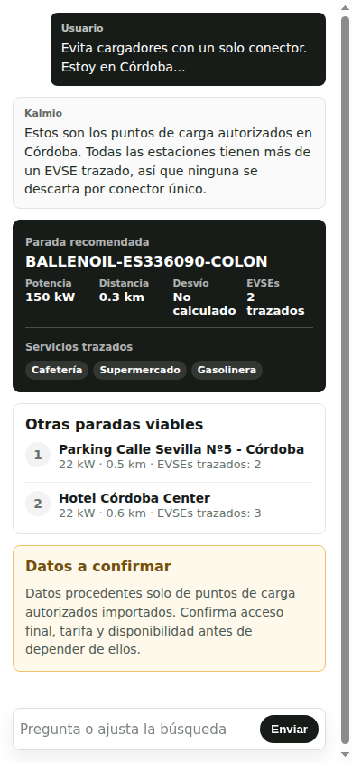
Evaluacion de valor: Caso 027
Aporta valor real- Utilidad: cumple la preferencia de evitar puntos con un solo EVSE/conector usando datos trazados.
- Claridad: la tarjeta principal expone 2 EVSEs trazados y las alternativas exponen 2 y 3.
- Confianza: evita llamar "conectores" a un dato que era
availableEvses. - Ansiedad de carga: reduce el riesgo percibido de depender de un unico punto, sin prometer disponibilidad en vivo.
- Decision: el usuario puede comparar potencia, distancia y EVSEs trazados sin revisar JSON ni mapa.
Ultima critica UX: Caso 027
Sin pendientes relevantesAssessment A: revision manual mobile
- El dato que responde a la preferencia del usuario aparece en el primer viewport:
EVSEs 2 trazados. - La lista de alternativas conserva EVSEs trazados y distancia, permitiendo comparar densidad de puntos.
- El copy ya no afirma conteo de conectores no trazado ni disponibilidad en vivo.
- Riesgo residual aceptado: EVSEs trazados no equivale a disponibilidad real; el aviso lo deja claro.
Assessment B: detector y trazas
- Detector sobre archivos de producto: sin findings.
- Detector sobre maqueta HTML final: solo aviso de jerarquia tipografica plana del artefacto estatico; no pendiente de producto.
- Trace final: DeepSeek, 2 llamadas LLM, 1
search_destination_chargers, 0 guardrails, coste estimado$0.00190071. - Assessment independence: degraded, sin sub-agentes disponibles; revision secuencial con captura mobile, detector y trazas.
Verificacion tecnica: Caso 027
OKbackend/.venv/bin/python -m pytest backend/routing/test_route_api.py -k "single_connector or available_evses": 3 passed.backend/.venv/bin/python -m pytest backend/routing/test_route_api.py: 147 passed.npm test -- --run src/components/a2ui/a2ui-renderer.test.tsx: 15 passed.- Capturas
case-027-before-mobile.pngycase-027-after-mobile.png: viewport movil 390x844.
Archivos modificados: Caso 027
Caso 027backend/routing/agent.pybackend/routing/test_route_api.pyfrontend/src/components/a2ui/a2ui-renderer.tsxfrontend/src/components/a2ui/a2ui-renderer.test.tsxreports/artifacts/case-027-before-mobile.htmlreports/artifacts/case-027-before-mobile.pngreports/artifacts/case-027-after-mobile.htmlreports/artifacts/case-027-after-mobile.pngreports/artifacts/case-027-final-turn-1.jsonreports/artifacts/case-027-final-summary.jsonreports/ux-testcase-report.html
Caso 028: Reserva dura del 30%
Final: pasa sin cambios
Conversacion:
No quiero bajar nunca del 30%. Madrid a Valencia con 70%.
Flujo que valida: Kalmio debe tratar el 30% como reserva dura en la herramienta, pero no puede afirmar que se cumple sin perfil de vehiculo, consumo o autonomia autorizados.
Salida inicial real
La salida inicial ya cumple. Llama plan_route con
reserve_min_percent=30, muestra distancia/duracion y paradas trazadas, y dice dos veces que
no puede validar bateria de llegada ni reserva.
Componentes: RouteSummaryCard RecommendedStopCard RiskExplanationCard AlternativeStopsList Herramienta: plan_route.preferences.reserve_min_percent = 30 Datos no inventados: energyKwh: null arrivalBattery: null
{kind=link}
Problemas encontrados
- No se encontraron problemas relevantes de UX, factualidad o A2UI en la salida inicial.
- El 30% se pasa como reserva de herramienta y tambien se explica como no validable sin consumo/perfil.
- La UI muestra energia y llegada como no calculadas, evitando falsa precision.
- No se inventan autonomia, consumo, llegada, precios, disponibilidad ni estado del vehiculo.
Cambios realizados: Caso 028
Sin cambios de producto- No se modifico backend ni frontend para este caso.
- Se generaron artefactos y capturas mobile antes/despues; ambas representan la misma salida validada.
- Se documento que el caso pasa con reserva trazada y sin claims de llegada.
Resultado final: Caso 028
Pasa con DeepSeek
La salida final conserva la salida inicial: reserve_min_percent=30 en herramienta,
planningLevel=chargers_only, paradas trazadas y aviso claro de que el 30% no puede validarse
sin datos del coche.
Trace final: 2 llamadas LLM 1 herramienta plan_route 0 guardrails Coste estimado: $0.00179938
Capturas antes/despues: Caso 028
Mobile 390x844
Evaluacion de valor: Caso 028
Aporta valor real- Utilidad: respeta la reserva del 30% como preferencia de calculo.
- Claridad: explica que no puede confirmar el cumplimiento sin consumo/autonomia/modelo.
- Confianza: energia y llegada quedan como no calculadas en la tarjeta.
- Ansiedad de carga: ofrece puntos trazados de respaldo sin venderlos como plan optimizado.
- Decision: el usuario puede ver la ruta y paradas, y sabe que debe aportar perfil del coche para validar la reserva.
Ultima critica UX: Caso 028
Sin pendientes relevantesAssessment A: revision manual mobile
- El 30% aparece en el texto inicial antes de la tarjeta de parada.
- La tarjeta de ruta muestra energia y llegada como no calculadas, evitando falsa certeza.
- El RiskExplanationCard repite el limite de datos sin esconderlo detras de alternativas.
- Riesgo residual aceptado: las paradas son contexto de corredor, no plan de reserva validado.
Assessment B: detector y trazas
- Detector sobre archivos de producto: sin findings.
- Detector sobre maqueta HTML final: solo aviso de jerarquia tipografica plana del artefacto estatico; no pendiente de producto.
- Trace final: DeepSeek, 2 llamadas LLM, 1
plan_route, 0 guardrails, coste estimado$0.00179938. - Assessment independence: degraded, sin sub-agentes disponibles; revision secuencial con captura mobile, detector y trazas.
Verificacion tecnica: Caso 028
OK- Validacion manual del caso 028: pasa con DeepSeek.
- Ultima suite completa tras los cambios del caso 027:
backend/.venv/bin/python -m pytest backend/routing/test_route_api.py: 147 passed. - Ultimo test renderer tras los cambios del caso 027:
npm test -- --run src/components/a2ui/a2ui-renderer.test.tsx: 15 passed. - Capturas
case-028-before-mobile.pngycase-028-after-mobile.png: viewport movil 390x844.
Archivos modificados: Caso 028
Caso 028reports/artifacts/case-028-before-mobile.htmlreports/artifacts/case-028-before-mobile.pngreports/artifacts/case-028-after-mobile.htmlreports/artifacts/case-028-after-mobile.pngreports/artifacts/case-028-initial-turn-1.jsonreports/artifacts/case-028-initial-summary.jsonreports/ux-testcase-report.html
Caso 029: Preferencia por hubs grandes
Final: pasa tras ajuste de prompt
Conversacion:
Prefiero hubs grandes aunque sean un poco mas caros....
Flujo que valida: Kalmio debe entender una preferencia de decision sobre paradas, pedir ruta o ubicacion antes de buscar, y dejar claro que no valida precios/tarifas si el proveedor no los da.
Salida inicial real
La salida visible era util y honesta: pedia ruta o ubicacion y avisaba que no podia inventar tarifas ni
precios. La traza, sin embargo, mostro un problema interno: DeepSeek intento llamar
plan_route con origen/destino vacios y coordenadas 0,0. El guardrail de backend
lo bloqueo y recupero con una respuesta final.
Componentes: AssistantMessage PreferenceChips UserMessage AssistantMessage Problema interno: 1 guardrail ungrounded_tool_arguments Intento de plan_route con ubicaciones vacias 0 herramientas ejecutadas finalmente
{kind=link}
Problemas encontrados
- La experiencia visible no inventaba datos, pero dependia de una reparacion por guardrail.
- Un usuario no ve el guardrail, pero el sistema gastaba una llamada extra y mostraba fragilidad ante preferencias sin contexto.
- El riesgo A2UI/producto era que futuras variantes de "hubs grandes" pudieran activar herramientas sin ubicacion trazada.
- No se encontraron problemas visuales relevantes en mobile; el CTA queda estable y el texto cabe en pantalla.
Cambios realizados: Caso 029
Backend agent prompt- Se amplio la guia del agente para tratar "hubs grandes o tamano de parada" como preferencia de decision sobre paradas, no como hardware ni ruta calculable sin contexto.
- Se explicito que, si falta ruta o ubicacion, el agente no debe llamar herramientas con ubicaciones vacias y debe pedir origen/destino o ubicacion actual.
- Se mantuvo la filosofia A2UI: el agente decide la respuesta; el backend solo valida argumentos, datos trazables y contratos antes de renderizar.
- Se agrego test de prompt para la preferencia de hubs grandes sin contexto de ubicacion.
Resultado final: Caso 029
Pasa con DeepSeekLa salida final pregunta por ruta o ubicacion concreta antes de buscar, no ejecuta herramientas, no inventa tarifas/precios y conserva un tono directo. El backend no toma una decision conversacional: solo valida que no haya herramientas no trazadas ni bloques fuera de contrato.
Respuesta final: "Entendido, prefieres hubs grandes aunque puedan ser algo mas caros. Para buscar opciones que encajen, necesito saber tu ruta o la ubicacion donde quieres cargar. ¿Tienes un origen y destino, o estas en alguna zona concreta? Ten en cuenta que no puedo inventar tarifas ni precios si el proveedor no los proporciona." Trace final: 2 llamadas LLM 0 herramientas 0 guardrails Coste estimado: $0.00143712
Capturas antes/despues: Caso 029
Mobile 390x844Evaluacion de valor: Caso 029
Aporta valor real- Utilidad: convierte una preferencia ambigua en el siguiente dato necesario: ruta o ubicacion.
- Claridad: distingue "hubs grandes" de precios reales y no promete comparativa economica sin proveedor.
- Confianza: no inventa estaciones, disponibilidad, precios, coordenadas ni estado del vehiculo.
- Ansiedad de carga: evita dar una falsa recomendacion antes de saber donde debe cargar el conductor.
- Decision: el usuario sabe que puede responder con origen/destino o zona concreta para aplicar la preferencia.
Ultima critica UX: Caso 029
Sin pendientes relevantesAssessment A: revision manual mobile
- El mensaje cabe en el primer viewport movil y no obliga a leer una tarjeta larga para entender el siguiente paso.
- La pregunta permite dos caminos naturales: ruta completa u ubicacion/zona concreta.
- La limitacion de tarifas/precios aparece en el mismo bloque, sin esconderse en metadata.
- La tarjeta de nota del artefacto refuerza que se necesitan datos trazados antes de aplicar la preferencia.
Assessment B: detector y trazas
- Detector sobre archivos de producto: sin findings.
- Detector sobre maqueta HTML final: solo aviso de jerarquia tipografica plana del artefacto estatico; no pendiente de producto.
- Trace final: DeepSeek, 2 llamadas LLM, 0 herramientas, 0 guardrails, coste estimado
$0.00143712. - Assessment independence: degraded, sin sub-agentes disponibles; revision secuencial con captura mobile, detector y trazas.
Verificacion tecnica: Caso 029
OKbackend/.venv/bin/python -m pytest backend/routing/test_route_api.py -k "price_preference_without_route_context or large_hub_preference": 2 passed.backend/.venv/bin/python -m pytest backend/routing/test_route_api.py: 148 passed.npm test -- --run src/components/a2ui/a2ui-renderer.test.tsx: 15 passed.- Capturas
case-029-before-mobile.pngycase-029-after-mobile.png: viewport movil 390x844.
Archivos modificados: Caso 029
Caso 029backend/routing/agent.pybackend/routing/test_route_api.pyreports/artifacts/case-029-before-mobile.htmlreports/artifacts/case-029-before-mobile.pngreports/artifacts/case-029-after-mobile.htmlreports/artifacts/case-029-after-mobile.pngreports/artifacts/case-029-initial-turn-1.jsonreports/artifacts/case-029-initial-summary.jsonreports/artifacts/case-029-final-turn-1.jsonreports/artifacts/case-029-final-summary.jsonreports/ux-testcase-report.html
Caso 030: Tesla Model Y con 45%
Final: pasa tras validacion de vehiculo parcial
Conversacion:
Tengo un Tesla Model Y y salgo con 45%... Madrid a Valencia.
Flujo que valida: Kalmio debe usar modelo y bateria como contexto conversacional, pero no puede inventar consumo, autonomia, energia ni bateria de llegada. Debe mostrar solo paradas de ruta trazadas salvo que exista perfil de vehiculo completo y autorizado.
Salida inicial real
La salida inicial no aportaba suficiente valor: intento planificar con plan_route, pero el
agente envio un vehicle parcial con modelo y bateria mas campos null. El backend
lo interpreto como un perfil EV invalido, la herramienta fallo sin estaciones compatibles y el agente
repitio la misma herramienta hasta activar guardrail.
Componentes: AssistantMessage PreferenceChips UserMessage AssistantMessage Trace inicial: 3 llamadas LLM 1 herramienta plan_route con error 1 guardrail repeated_tool_call Coste estimado: $0.00189299
{kind=link}
Problemas encontrados
- No devolvia RouteSummaryCard ni paradas, aunque habia origen/destino y datos autorizados de corredor.
- La frase "no se encontraron estaciones compatibles" aumentaba ansiedad de carga y era consecuencia de un perfil parcial mal normalizado.
- La frontera de herramienta fabricaba un perfil con conector vacio y potencia 1 kW a partir de campos
null. - El caso necesitaba mantener A2UI agentico: no crear un parser de intencion, sino validar argumentos estructurados y guiar al agente.
Cambios realizados: Caso 030
Backend validation + promptparse_vehicle_argahora trata un perfil parcial con campos ausentes onullcomoNone; no crea un vehiculo con defaults artificiales.- El prompt DeepSeek aclara que modelo comercial y bateria de salida no bastan para
vehicleenplan_route. - Se mantiene el backend como validador de argumentos y datos trazables; no decide la intencion ni fuerza componentes A2UI.
- Se agregaron tests de prompt y de herramienta para Tesla Model Y + 45% sin perfil completo.
Resultado final: Caso 030
Pasa con DeepSeek
La salida final llama plan_route con vehicle:null, obtiene
planningLevel=chargers_only, muestra ruta Madrid-Valencia, recomienda
Moya Hub Honrubia y deja energyKwh/arrivalBattery sin calcular.
Componentes finales: AssistantMessage RouteSummaryCard RecommendedStopCard RiskExplanationCard AlternativeStopsList Trace final: 3 llamadas LLM 1 herramienta plan_route OK 0 guardrails Coste estimado: $0.00374267
Capturas antes/despues: Caso 030
Mobile 390x844Evaluacion de valor: Caso 030
Aporta valor real- Utilidad: ofrece ruta y puntos de carga trazados para Madrid-Valencia.
- Claridad: reconoce Model Y y 45% como contexto, pero explica que faltan consumo/capacidad para validar llegada.
- Confianza: no inventa consumo Tesla, autonomia, energia ni bateria de llegada.
- Ansiedad de carga: sustituye un fallo ambiguo por una parada concreta y un limite honesto.
- Decision: el conductor puede usar la parada trazada o aportar consumo/capacidad para validar si llega sin cargar.
Ultima critica UX: Caso 030
Sin pendientes relevantesAssessment A: revision manual mobile
- La salida final responde al viaje real en el primer viewport: ruta, 45% de salida y limite de calculo.
- RouteSummaryCard muestra energia y llegada como
No calculado, evitando falsa precision. - RecommendedStopCard aparece antes del aviso largo, reduciendo ansiedad sin ocultar la incertidumbre.
- Riesgo residual aceptado: el detalle completo de RiskExplanationCard queda bajo el fold, pero el aviso esencial ya aparece en el mensaje inicial y en la ruta.
Assessment B: detector y trazas
- Detector sobre archivos de producto: sin findings.
- Detector sobre maqueta HTML final: solo aviso de jerarquia tipografica plana del artefacto estatico; no pendiente de producto.
- Trace final: DeepSeek, 1
plan_routeOK,planningLevel=chargers_only, 0 guardrails. - Assessment independence: degraded, sin sub-agentes disponibles; revision secuencial con captura mobile, detector y trazas.
Verificacion tecnica: Caso 030
OKbackend/.venv/bin/python -m pytest backend/routing/test_route_api.py -k "model_and_departure_battery or partial_vehicle_profile": 2 passed.backend/.venv/bin/python -m pytest backend/routing/test_route_api.py: 150 passed.npm test -- --run src/components/a2ui/a2ui-renderer.test.tsx: 15 passed.- Capturas
case-030-before-mobile.pngycase-030-after-mobile.png: viewport movil 390x844.
Archivos modificados: Caso 030
Caso 030backend/routing/agent.pybackend/routing/tools.pybackend/routing/test_route_api.pyreports/artifacts/case-030-before-mobile.htmlreports/artifacts/case-030-before-mobile.pngreports/artifacts/case-030-after-mobile.htmlreports/artifacts/case-030-after-mobile.pngreports/artifacts/case-030-initial-turn-1.jsonreports/artifacts/case-030-initial-summary.jsonreports/artifacts/case-030-final-turn-1.jsonreports/artifacts/case-030-final-summary.jsonreports/ux-testcase-report.html